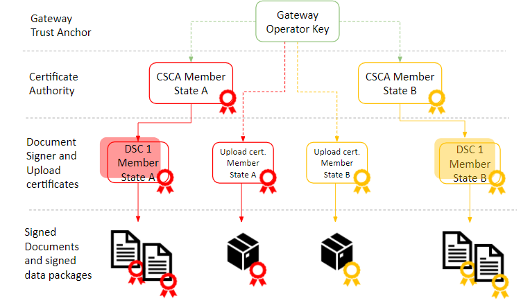
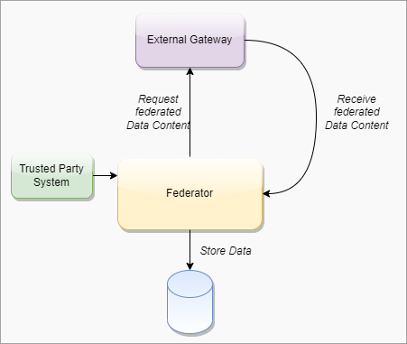

Машинный перевод — не проверен человеком
Эта страница переведена автоматически. Ни один человек не проверял и не утверждал этот перевод, поэтому он может содержать ошибки. Авторитетной является только страница на языке оригинала. Читать оригинал (английский)
Machine translation — not reviewed by a person
This page was translated automatically. No person has reviewed or adjudicated this translation, and it may contain errors. The source-language page is the authoritative text. Read the original (English)
Модели данных и обмен
Акторы
Акторы создают медицинскую информацию, управляют ею или выполняют действия на её основе. Ниже перечислены акторы, относящиеся к сети доверия SMART.
Библиотека бизнес-правил
Доверенная услуга, предоставляемая узлом в сети доверия, для обмена бизнес-правилами с использованием спецификации Clinical Quality Language (CQL).
Каталог продуктов
Используется для ведения и публикации основных данных о продуктах здравоохранения, медицинских изделиях и товарах, на которые могут ссылаться Проверяемые цифровые сертификаты о состоянии здоровья.
Терминологическая служба
Используется для ведения и публикации сопоставлений между различными локальными системами кодирования и требуемыми словарями, которые используются в Проверяемых цифровых сертификатах о состоянии здоровья.
Публикация ключей
Инициирующие события
Участник сети доверия или один из уполномоченных им эмитентов генерирует новую пару открытого и закрытого ключей для подписания документов.
Семантика сообщений
См. документацию EU DCC Open API. Назначение ключа — DSC (Document Signing Certificate, сертификат подписания документов)
Ожидаемые действия
Якорь доверия проверяет представленные ключевые материалы и распространяет их среди других Участников сети доверия
Зеркалирование локального PKD
Инициирующие события
Семантика сообщений
Ожидаемые действия
Этапы включают:
- Подключение локального PKD (однократно). Подключение может включать оценку формата локального PKD, предоставление доступа к федеративному PKD и подписание деловых соглашений.
- Открытые ключи локального PKD зеркалируются (периодически)
- Зеркалированные открытые ключи объединяются в основной список (периодически)
- Основной список подписывается цифровой подписью для распространения
От локальных PKD, участвующих в федеративном PKD, ожидается, что они:
- Располагать существующей инфраструктурой открытых ключей, используемой для выдачи доверенных медицинских документов (например, сертификатов COVID)
- Иметь разрешения/политики, позволяющие предоставлять открытые ключи
- Может предоставлять открытые ключи в одном из следующих форматов:
- X.509
- Веб-ключи JSON (JWK)
- Децентрализованные идентификаторы (DID) в соответствии со спецификацией GDHCN.
От федеративных PKD ожидается, что они:
- Располагать средствами получения локальных каталогов открытых ключей / узлов-членов, представленных в службах агрегирования
- Иметь разрешения/политики, позволяющие предоставлять открытые ключи узлов-членов сети доверия
- Располагать существующей инфраструктурой открытых ключей, используемой для подписания списка ключей узлов-членов
- Может предоставлять список открытых ключей в следующем формате:
- Децентрализованные идентификаторы (DID) в соответствии со спецификацией GDHCN.
Подписание утверждения медицинского сертификата (HCERT)
Инициирующие события
Полезная нагрузка утверждения HCERT сформирована и готова к подписанию эмитентом, действующим от имени Участника сети доверия.
Семантика сообщений
Результатом будет действительный подписанный HCERT
Ожидаемые действия
Публикация ключей проверки — API
Инициирующие события
Участник сети доверия публикует ключи в Шлюзе сети доверия для использования приложениями проверки. Ключи могут быть закодированы для различных целей, в том числе в соответствии с управлением сертификатами согласно их $usage и $domain доверия
Семантика сообщений
См. Swagger API
Ожидаемые действия
Получение ключей проверки — DID
Инициирующие события
Семантика сообщений
Ключи следует получать в соответствии со спецификацией GDHCN DID.
Ожидаемые действия
После подключения к сети доверия приложение проверки может получать ключи проверки. Полученный список ключей проверки может использоваться в следующих бизнес-процессах:
- Подключение федеративного PKD путём получения ключа подписи, используемого для подписания основного списка (однократно).
- Получение основного списка из федеративного PKD и проверка подписи (периодически).
- Десериализация проверяемого QR-кода (например, двумерного штрихкода с данными о вакцинации) для определения идентификатора ключа.
- Получение открытого ключа, связанного с идентификатором ключа, из основного списка или использование кэшированного ключа.
- Проверка
- криптографическую подпись в двумерном штрихкоде.
- полномочия эмитента на выдачу данного типа сертификата с использованием данного ключа.
- дату истечения срока действия ключей.
- дату истечения срока действия сертификата.
- отсутствие сертификата в доступных списках отзыва.
- наличие ключа эмитента в списке доверия выдающего органа (ключ не отозван).
- наличие ключа эмитента в списке доверия органа, осуществляющего проверку.
- соответствие имени/личности в сертификате документу, удостоверяющему личность.
- соответствие сертификата бизнес-правилам юрисдикции, осуществляющей проверку.
Получение ключей проверки — API
Инициирующие события
Семантика сообщений
См. Swagger API
Ожидаемые действия
После подключения к сети доверия приложение проверки может получать ключи проверки. Полученный список ключей проверки может использоваться в следующих бизнес-процессах:
- Подключение федеративного PKD путём получения ключа подписи, используемого для подписания основного списка (однократно).
- Получение основного списка из федеративного PKD и проверка подписи (периодически).
- Десериализация проверяемого QR-кода (например, двумерного штрихкода с данными о вакцинации) для определения идентификатора ключа.
- Получение открытого ключа, связанного с идентификатором ключа, из основного списка или использование кэшированного ключа.
- Проверка
- криптографическую подпись в двумерном штрихкоде.
- полномочия эмитента на выдачу данного типа сертификата с использованием данного ключа.
- дату истечения срока действия ключей.
- дату истечения срока действия сертификата.
- отсутствие сертификата в доступных списках отзыва.
- наличие ключа эмитента в списке доверия выдающего органа (ключ не отозван).
- наличие ключа эмитента в списке доверия органа, осуществляющего проверку.
- соответствие имени/личности в сертификате документу, удостоверяющему личность.
- соответствие сертификата бизнес-правилам юрисдикции, осуществляющей проверку.
Ключи следует получать в соответствии со спецификацией GDHCN DID.
Запрос обновлений бизнес-правил — API
Инициирующие события
Семантика сообщений
См. Swagger API
Ожидаемые действия
Запрос обновлений бизнес-правил — API
Инициирующие события
Семантика сообщений
Должен выступать в роли библиотеки бизнес-правил:
- Выражает политику в области здравоохранения (например, «Требуется полный курс вакцинации») в виде исполняемого бизнес-правила на языке Clinical Quality Language (CQL) как ресурс FHIR Library
- Публикует бизнес-правила в виде ресурсов FHIR Library через доверенную службу здравоохранения
Необязательно:
- Предоставить цифровую подпись бизнес-правила в виде ресурса FHIR Provenance
- Предоставляет открытый ключ в PKD
Ожидаемые действия
Выполнение бизнес-правила
Инициирующие события
Семантика сообщений
Ожидаемые действия
Приложение проверки:
- Предварительное условие: выполнить процесс федеративной проверки одного или нескольких QR-кодов
- Определить одно (или несколько) бизнес-правил, подлежащих выполнению в соответствии с вариантом использования
Необязательно:
- Получает открытый ключ подписи бизнес-правил из PKD (локального PKD либо через агрегирующий/федеративный PKD)
- Проверяет подлинность бизнес-правила
- Сопоставить содержимое QR-кода с необходимыми ресурсами FHIR с помощью FHIR Structure Maps
- Выполнение бизнес-правила на языке CQL в отношении содержимого ресурсов FHIR
Запрос наборов значений — API
Инициирующие события
Семантика сообщений
См. Swagger API
Ожидаемые действия
Запрос наборов значений — FHIR
Инициирующие события
Семантика сообщений
Транзакции со службой терминологии см. в IHE Sharing Value Sets and Concept Maps.
Ожидаемые действия
Выполнение бизнес-правила
Инициирующие события
Семантика сообщений
Ожидаемые действия
Рабочие процессы
Плановая синхронизация
Проверка цифровых сертификатов о состоянии здоровья
Агрегация федеративного PKD
Федеративная проверка
Динамическая валидация бизнес-правил
Домены доверия
Домен доверия включает:
- Определённые варианты использования и бизнес-процессы, связанные с использованием Проверяемых цифровых сертификатов о состоянии здоровья; эти Проверяемые цифровые сертификаты о состоянии здоровья могут выдаваться или проверяться с помощью Доверенных услуг, предоставляемых Участниками сети доверия цифрового здравоохранения.
- открытые, совместимые технические спецификации, которые определяют или устанавливают применимые Доверенные услуги и Проверяемые цифровые сертификаты о состоянии здоровья; и
- набор политических и нормативных стандартов, описывающих ожидаемое поведение Участников GDHCN в связи с функционированием Доверенных услуг и использованием Проверяемых цифровых сертификатов о состоянии здоровья (например, минимизация данных, конфиденциальность, сфера использования).
Коды Доменов доверия GDHCN содержатся в наборе значений Доменов доверия GDHCN (GDHCN Trust Domain Value Set).
Модель Домена доверия
Административно-операционный рамочный документ GDHCN является правовым источником для Доменов доверия. Логическая модель Домена доверия следует его определению, состоящему из трёх частей: варианты использования (моделируемые компонентами DAK), технические спецификации, а также политические и нормативные стандарты. Домен доверия также указывает свои условия использования — ValueSet политик, о действии в соответствии с которыми может заявить участник.
Участник указывает эти политики в проверяемом удостоверении (Verifiable Credential), по одной записи termsOfUse на каждую политику. Например, так поступает получатель VHL (VHL Receiver) в рамках опции Verifiable Credential профиля IHE ITI VHL.
Модель допускает, что любая из частей может быть пустой, однако пустая часть считается ошибкой контроля качества (QA). Ошибкой также считается ValueSet условий использования, который не используется ни одним бизнес-процессом BPMN.
| Домен доверия | Определено в | Условия использования |
|---|---|---|
| DDCC | Рамочный документ, приложение I | Условия использования DDCC |
| IPS-PILGRIMAGE | Приложения к Рамочному документу пока нет; составлено на основе IG IPS Pilgrimage | IPS.HAJJ.CONSENT |
Цифровая документация сертификатов COVID-19 (DDCC)
Цифровая документация сертификатов COVID-19 (DDCC), опубликованная в августе 2021 г., и аналогичное руководство по результатам тестов (https://www.who.int/publications/i/item/WHO-2019-nCoV-Digital_certificates_diagnostic_test_results-2022.1), опубликованное в марте 2022 г., служат основой для соответствующего руководства по внедрению FHIR. Настоящее руководство по внедрению (IG) является вычислимым представлением основных элементов данных опубликованного руководства, сопоставленных со стандартными терминологиями. Эти модели данных в форме логических моделей FHIR и терминологии в форме наборов значений FHIR лежат в основе совместимости между различными форматами удостоверений. IG содержит карты структур (Structure Maps) и карты понятий (Concept Maps) FHIR для определения преобразований между поддерживаемыми форматами удостоверений и основным набором данных, что позволяет выполнять бизнес-правила в отношении общего набора элементов данных.
QR-коды и логические модели DDCC{:width=”850em”}
В настоящее время в рамках Цифровой документации сертификатов COVID (DDCC) ВОЗ признаются следующие профили содержимого:
- Цифровые сертификаты COVID (DCC) Европейского союза (обязательно)
- DIVOC (необязательно)
- Видимые цифровые печати без ограничений (VDS-NC) Международной организации гражданской авиации (ИКАО) (необязательно)
- Smart Health Cards (SHC) — иммунизация (необязательно)
Исходные спецификации
Найти спецификации, являющиеся „источником истины“ для форматов сертификатов, сопоставленных с основными наборами данных DDCC, может быть затруднительно. Наиболее известная документация по каждому из перечисленных выше форматов сертификатов приведена в библиографии:
- EU DCC: [ehn-trust-framework-2021], [ehn-dcc-techspec-vol1-2021], [etsi-en-319-102-1-2016], [ec-dcc-techspec-vol1-5], [ec-dcc-vol1-2022], [eu-implementing-decision-2021-1073]
- DIVOC:
- Элементы определены с помощью JSON-LD. По состоянию на 2023-02-12 наиболее актуальный контекст JSON-LD для вакцин и для результатов тестов находится здесь. Обратите внимание, что URI контекстов JSON-LD, специфичных для DIVOC и встроенных в сертификаты, не разрешаются.
- Документация DIVOC находится здесь, но она не содержит описаний на уровне элементов (например, привязок к терминологиям на уровне отдельных элементов).
- Привязки к терминологиям на уровне элементов приходится выводить из более общей документации. Контекст JSON-LD
v2вводит элементevidence.icd11Codeдля вакцин, однако документация о том, к каким кодам привязан этот элемент и используется ли он в промышленной эксплуатации, отсутствует. Иного вычислимого представления типа/продукта вакцины не существует.
- ИКАО: [icao-vds-nc]
- SMART Health Cards: [smart-health-cards-spec], [hl7-shc-vaccination-ig]
PH4H
Руководство по внедрению Панамериканской магистрали цифрового здравоохранения (PH4H) описывает использование GDHCN в Американском регионе.
IPS для паломничества (IPS-Pilgrimage)
Руководство по внедрению IPS Pilgrimage содержит машиночитаемое представление руководящих принципов ВОЗ в отношении проверяемой IPS во время паломничества. В нём в явном виде закодирована логика, пригодная для компьютерной совместимости, включая модели данных, терминологии и логические выражения, на вычислимом языке в целях поддержки внедрения IPS в варианты использования во время паломничества.
Терминология
Эти концепции и следующая таблица содержат сокращения и терминологию, используемые в настоящем документе.
| Термин | Описание |
|---|---|
| DCC | Цифровой сертификат COVID-19 (Digital COVID-19 Certificate). |
| DDCC | Цифровая документация сертификатов COVID-19 (Digital Documentation COVID-19 Certificate). |
| DCC Gateway | Веб-приложение REST для обмена сертификатами подписантов документов, наборами значений DCC, бизнес-правилами DCC и списками отзыва для целей проверки DCC между национальными бэкендами подключённых государств. |
| CMS | Cryptographic Message Syntax (синтаксис криптографических сообщений) согласно RFC5652. Этот синтаксис используется для цифровой подписи, вычисления дайджеста, аутентификации или шифрования произвольного содержимого сообщений. |
| JRC | Европейский объединённый исследовательский центр (European Joint Research Centre). |
| OG | Исходный шлюз (Origin Gateway). |
| CQL | Clinical Quality Language (язык клинического качества). |
Введение
Настоящая архитектурная спецификация предоставляет средства для создания федеративной сети доверия для использования с медицинскими записями, например в рамках технических спецификаций и руководящих документов по внедрению Цифровой документации сертификатов COVID-19 (DDCC) ВОЗ. Она основана на предположении, что участники сети доверия могут создавать собственные независимые национальные сети доверия, участвовать в региональной сети доверия или пожелать участвовать в глобальной федеративной сети доверия. Кроме того, участники сети доверия могут пожелать, чтобы эти сети доверия были совместимы для внутренних и межъюрисдикционных вариантов использования. Хотя конкретные вопросы управления и политики, которые необходимо учитывать при создании таких совместимых сетей доверия, выходят за рамки настоящего документа, предполагается, что техническая архитектура, описанная в настоящем документе, будет поддерживать внутриюрисдикционные и межъюрисдикционные политики участников сети доверия.
Спецификации Шлюза сети доверия (TNG) в настоящем документе предназначены для поддержки спецификации DDCC, которая служит связующей/рамочной спецификацией для различных медицинских записей, таких как цифровые сертификаты COVID (например, EU DCC, SMART Health Cards, DIVOC и ИКАО (ICAO)). Настоящая спецификация основана на EU Digital Covid Certificate Gateway и расширяет его в нескольких важных направлениях:
- обеспечивая федерацию и одноранговый обмен информацией между шлюзами;
- поддерживая доступ к содержимому метаданных (например, наборам значений/кодировкам, бизнес-правилам) с явным соблюдением спецификации HL7 FHIR;
- предоставляя явные средства отзыва цифровых сертификатов COVID; и
- обеспечивая (необязательную) поддержку рабочих процессов онлайн-проверки и валидации.
В текущей системе DCC централизованный шлюз играет ключевую роль в установлении доверия между всеми подключёнными участниками сети доверия. Операторы шлюза следуют хорошо задокументированному процессу установления идентичности и подключения якоря доверия каждого участника сети доверия. TNG развивает эту систему, позволяя другим организациям создавать шлюзы доверия, что даёт возможность сформировать федеративную сеть шлюзов доверия, поддерживающую все основные сертификаты-удостоверения COVID-19.
Доверенная сторона и национальный бэкенд
Текущая концепция шлюза ориентирована на установление доверия между «национальными бэкендами» (“National Backends”), т. е. системами, эксплуатируемыми национальным органом здравоохранения или принадлежащими ему. Это может быть скрипт, полностью автоматизированное решение или ручной процесс, который способен доверенным образом подключаться к шлюзу и выполнять загрузку и выгрузку содержимого. Какие конкретные решения стоят за этим, выходит за рамки самого шлюза. В контексте DDCC термин «национальный бэкенд» (“National Backend”) сформулирован слишком узко, поскольку к шлюзу в сети доверия могут подключаться со своими системами публикации и другие стороны. Поэтому в данном контексте термин «национальный бэкенд» (“national backend”) следует понимать скорее как «доверенную сторону» (“Trusted Party”), т. е. участника, получившего доступ к доверенному шлюзу. Доверенный шлюз или федератор в свою очередь также выступает в роли «доверенной стороны» (“Trusted Party”) по отношению к другим шлюзам.
Концепция проектирования шлюза
В настоящее время EU DCC Gateway представляет собой единую централизованную систему, которая устанавливает доверие между участниками DCC и обеспечивает совместное использование бизнес-правил, наборов значений и списков отзыва. Если в другом регионе мира будет создан такой шлюз, в архитектуре на данный момент нет способа обмениваться этими доверенными данными между двумя шлюзами. В новой архитектуре в контексте DDCC несколько шлюзов могут быть соединены друг с другом и совместно использовать доверенные данные. В долгосрочной перспективе эта архитектура позволит создавать группы и в конечном итоге сформировать федерацию. Такая архитектура может быть применима и представлять интерес для сторон, не являющихся органами власти, например авиакомпаний, которым нужна копия содержимого шлюза только для чтения. Этого можно добиться, подключив авиакомпанию к шлюзу, специально настроенному для этой цели и соединённому с официальным шлюзом. Для достижения этой цели архитектура должна поддерживать несколько режимов работы, например Primary-Secondary (основной — вторичный). Как упоминалось выше, текущая реализация EU DCCG — это единая централизованная система, служащая узлом для хранения и управления необходимой информацией, собираемой от доверенных сторон.

В TNG следует реализовать данное расширение текущей реализации DCCG с целью создания сети из нескольких шлюзов для обмена материалом открытых ключей, связанным с медицинскими записями, наборами значений и бизнес-правилами между различными сторонами (органами власти, сторонами, не являющимися органами власти, коммерческими организациями). В этой архитектуре шлюз может подключаться к любому другому шлюзу путём ручной настройки списка соединений и доверительных отношений. Для управления соединениями и их поведением при загрузке вводится новый компонент — федератор. Федератор — это микросервис, который выступает автоматизированным клиентом загрузки между двумя шлюзами и выполняет все обязанности по обмену доверенными данными.

Основой этого обмена данными является функциональность текущей библиотеки коннектора, которая подключается к шлюзу и предоставляет потребителю наиболее необходимые функции. Эта библиотека дополняется возможностью подключения к нескольким шлюзам вместо одного.
Варианты использования
Двустороннее подключение
В варианте использования двустороннего подключения библиотека коннектора подключается в качестве доверенной стороны к нескольким шлюзам для загрузки/выгрузки содержимого. Это требует подключения к обоим шлюзам.

Одноранговый обмен
В варианте использования однорангового обмена два или более шлюза могут обмениваться данными в двустороннем режиме. Исходный и целевой шлюзы позволяют друг другу загружать данные. Все полученные в ходе обмена данные добавляются к существующим данным шлюза. Сюда могут входить данные сторонних шлюзов, если это разрешено соглашением об обмене данными между двумя шлюзами.

Обмен «основной — вторичный»
В варианте использования обмена «основной — вторичный» один или несколько шлюзов выступают в роли основного источника, а другая группа шлюзов — в роли вторичного источника. В этом режиме вторичные шлюзы загружают данные основного и добавляют их к собственному набору данных или заменяют им свой набор данных. Основной шлюз игнорирует данные вторичных, которые выступают лишь копиями основного шлюза для чтения. Ведущие национальные бэкенды могут подключаться к основному шлюзу и загружать данные в этот единственный основной шлюз.

Обмен из объединённых источников
В варианте использования обмена из объединённых источников шлюз загружает данные из нескольких шлюзов и добавляет их к собственному набору данных. В результате формируется объединённая коллекция.

Медиатор доверия
Содержимое шлюза может использоваться для установления доверия между участниками, которые связаны лишь слабо, например устройствами проверяющей стороны (Verifier Devices), которые известны доверенной стороне A, но не известны напрямую доверенной стороне B.

Для установления доверия между участниками может быть создан медиатор доверия, опирающийся на список доверия шлюза. Затем медиатор может использовать эту информацию, чтобы решить, следует ли устанавливать доверительные отношения. Например, перехватчик может проверить, была ли подпись JWT создана открытым ключом сертификата, подписанного подключённым SCA. Если SCA подключён и является доверенным, это доказывает, что подпись была создана тем, кому доверяет этот SCA. Тем самым доверие к этому участнику также обеспечивается.

Обзор архитектуры
Назначение Шлюза сети доверия — обеспечить защищённый и доверенный обмен данными в пределах сети доверия.
Данные, которыми обменивается TNG
Обмен метаданными
TNG предоставляет совместимые средства обмена ключевыми метаданными для поддержки цифровых сертификатов COVID-19 с использованием стандартов HL7 FHIR. Это включает, в частности:
- Наборы значений, которые рекомендуется совместно использовать с помощью транзакций, определённых в профиле IHE Sharing Value Sets and Concept Maps (SVCM), и которые включают следующие ресурсы:
- Ресурсы HL7 FHIR ValueSet для совместного использования кодировок и терминологий, на которые ссылаются различные спецификации цифровых сертификатов COVID (например, допустимые вакцины или тесты). - Ресурсы HL7 FHIR ConceptMap могут использоваться для сопоставления кодировок, определённых юрисдикцией, с кодировками спецификации DDCC.
- Бизнес-правила, которым рекомендуется соответствовать инфраструктуре Knowledge Artifact и Clinical Decision Support и включать следующие ресурсы:
- Ресурсы HL7 FHIR Library для совместного использования библиотек бизнес-правил, выраженных на языке Clinical Quality Language (CQL)
- Ресурсы HL7 FHIR PlanDefinition для указания того, какое бизнес-правило следует выполнять в зависимости от соответствующих вариантов использования для валидации или преемственности медицинской помощи.
Чтобы абстрагировать эти требования, Шлюз сети доверия вводит новую функциональность под названием «доверенные ссылки» (“Trusted References”), которая позволяет шлюзу совместно использовать любые конечные точки сервисов без передачи самого содержимого. Для обеспечения обратной совместимости функции бизнес-правил и наборов значений DCC сохраняются в архитектуре, но могут быть отключены с помощью профилей. Явные конечные точки для бизнес-правил и наборов значений будут заменены доверенными ссылками, поскольку широкое разнообразие медицинского содержимого следует оставить реализациям серверов FHIR, а не реализации каждого сервиса в самом шлюзе.
Обмен открытыми ключами
TNG предоставляет способ совместного использования открытых ключей, применяемых для подписания цифровых сертификатов COVID, а также предоставления списков отозванных сертификатов открытых ключей.
Обмен ссылками
TNG обеспечивает функциональность для хранения защищённых и доверенных ресурсов (т. е. наборов значений FHIR или бизнес-правил), которая гарантирует, что все участники системы точно знают о важных источниках. Эти ссылки могут храниться в виде URL.
Обмен данными об эмитентах
Для некоторых типов удостоверений, например Verifiable Credentials, TNG необходим для обеспечения доверия к эмитентам этих удостоверений. Большинство удостоверений содержат идентификатор эмитента, например URL HTTP или DID с материалом открытого ключа для проверки этих удостоверений. Для предоставления доверенного списка таких эмитентов шлюз предоставляет функцию загрузки идентификаторов эмитентов.
Концепция решения
Для реализации архитектурной концепции существующий DCC Gateway будет дополнен микросервисом, реализующим компонент TNG Federator. Этот компонент федератора развёртывается рядом со шлюзом и обеспечивает взаимодействие с другими федераторами. Каждый федератор может загружать данные других компонентов. Выгрузка данных в другие федераторы не предусмотрена (каждый шлюз загружает данные через федератор). Доверенные потребители могут принять решение об использовании информации федерации и должны явно активировать эту функцию. Таким образом, федератор выступает в роли коннектора/синхронизатора шлюзов и поставщика интерфейса для доступа к федеративным данным.

Примечание: базовая архитектура DCC Gateway остаётся неизменной. Для поддержки федерации вводятся лишь обратно совместимые расширения.
Установление соединения со шлюзом
Спецификация DDCC предоставляет совместимые стандарты для обмена содержимым метаданных, таким как доверенные ссылки, доверенные сертификаты и сертификаты подписантов, с системами через Шлюз сети доверия. Эти метаданные управляются доверенными системами, которым потребуется соединение/проксирование или сервис-фасад для работы со Шлюзом сети доверия («медиатор TNG» (“TNG Mediator”)). Этот медиатор должен быть подключён к TNG и признан доверенным его оператором, прежде чем станет возможной загрузка или выгрузка содержимого. Технически это может быть скрипт, бэкенд-система или медиатор OpenHIM. Основные задачи такого программного обеспечения — установление соединения mTLS со шлюзом, подписание загружаемого содержимого (например, CMS — Cryptographic Message Syntax) и загрузка подписанных DSC, записей об отзыве или выпуск бизнес-правил. Процедуры, используемые в фоновом режиме, выходят за рамки настоящего документа. Могут применяться ручные процессы выпуска, автоматические решения или иные процессы, однако крайне важно обеспечить, чтобы доверенный канал и безопасность сертификатов, используемых для загрузки/соединения TLS, не были скомпрометированы.
Варианты организации моста к другим системам
Для подключения существующих систем (т. е. PKD или любых других систем, содержащих сертификаты PKI (например, ИКАО (ICAO)), бизнес-правила или наборы значений (например, серверы FHIR)) к TNG необходим инструмент-мост, преобразующий полученные записи исходной системы в формат HL7 FHIR / Rest API шлюза. Например, для переноса каталога открытых ключей на основе LDAP в шлюз можно настроить скрипт/медиатор, который извлекает DSC и автоматически загружает их в шлюз. Обратите внимание, что в этом сценарии для работы процесса все SCA должны быть подключены до загрузки.
В особых обстоятельствах, когда необходимы «массовые транзакции данных» или интенсивная синхронизация, может быть предусмотрена возможность настройки адаптера непосредственно поверх базы данных шлюза. Сам TNG поддерживает JDBC, что позволяет использовать и другие базы данных, кроме mysql. Например, если используется Cassandra, MongoDb или CouchDB и доступен драйвер JDBC, данные могут реплицироваться на несколько узлов.
Примечание: репликации баз данных имеют собственное поведение, и функциональность шлюза не может охватить каждую доступную базу данных. Поэтому функцию JDBC следует использовать только при необходимости и на свой страх и риск.
Структурные блоки
Шлюз сети доверия состоит из DCC Gateway, дополненного механизмами обратного вызова и дополнительными источниками списков доверия, нового компонента федератора с клиентом загрузки, API федерации, прокси-сервера для исходящих вызовов и интерфейса к маршрутам различных сервисов.

Модель доверия
Обзор
Модель доверия шлюза основана на управлении сертификатами PKI шлюза DCC Gateway. Все элементы, важные для безопасности, загружаются в подписанном формате CMS и защищаются различными видами сертификатов PKI, как определено правилами управления сертификатами PKI. Центральными элементами модели доверия являются SCA, защищающий сертификаты подписантов документов, и сообщения CMS, защищающие загружаемое содержимое.
SCA и DSC
Для подписания цифровых сертификатов COVID-19 выдающий орган создаёт сертификат подписанта документов (“DSC”). Каждый орган распространяет свои DSC среди проверяющих сторон, чтобы DSC можно было использовать для подтверждения действительности выданного сертификата. Для установления цепочки доверия между используемыми DSC и распространителями национальных списков доверия каждый DSC подписывается корневым удостоверяющим центром (“SCA”) для проверки подлинности самого DSC. По соображениям безопасности SCA объявляется физически изолированным (air gapped), а его открытая часть затем подключается к шлюзу. В ходе подключения SCA подписывается оператором шлюза, чтобы обеспечить доверие при первоначальной проверке. После подключения каждый входящий DSC может проверяться по доверенному SCA. Подпись оператора (выполненная DCCGTA) устанавливает доверие к различным сертификатам, таким как сертификат загрузчика и сертификат аутентификации TLS, как определено правилами управления сертификатами.

Использование CMS
Для поддержки различного содержимого в шлюзе с одинаковым уровнем безопасности модель доверия вводит CMS в качестве универсального контейнера для элементов, важных для безопасности. Формат CMS позволяет стандартизировать подписание и шифрование независимо от содержимого, для одного или нескольких получателей.

Расширение
Текущая модель доверия DCC Gateway поддерживает только подключение нескольких бэкендов и обмен содержимым между ними (см. ниже).

Для реализации архитектурной концепции модель доверия шлюза будет расширена, чтобы федератор мог поддерживать несколько якорей доверия. Для этого TNG Federator будет подключён к исходному шлюзу с сертификатами TNPTLS и TNPUP для доступа к содержимому шлюза. В целевом шлюзе настраивается якорь доверия исходного шлюза (подписанный оператором), чтобы содержимое источника признавалось действительным. При успешной проверке содержимое добавляется как подмножество к существующему содержимому шлюза. Подключённые национальные бэкенды затем могут загружать всю информацию, активировав опцию федерации, чтобы получать содержимое обоих шлюзов. Цепочку доверия можно проверить по якорю доверия подключённого шлюза и списку доверия подключённых якорей доверия.

Примечание: федератор выступает в качестве особого вида «национального бэкенда» (“National Backend”), поэтому все сертификаты, связанные с TNP, за исключением TNPUP, подключаются в обычном порядке.
«Сырые» открытые ключи
Модель доверия не поддерживает «сырые» открытые ключи по соображениям безопасности, особенно в случаях, когда:
Действительность «сырых» ключей не может быть проверена; «сырой» ключ не может быть проверен источником (например, корневым удостоверяющим центром); «сырые» ключи легко создавать и распространять, и ненадлежащее управление «открывает дверь» всем участникам сети доверия
Поэтому все «сырые» ключи должны быть преобразованы в оболочку сертификата x509, чтобы стать DSC в шлюзе, и этот сертификат должен быть подписан надлежащим образом подключённым SCA. Этот процесс не влияет на проверку сертификата COVID-19, если при загрузке (и в сертификате) применяется правильный KID.
Ограничение DSC
Для поддержки унаследованных систем или при любой необходимости разграничения в процессе проверки, например для правильных эмитентов или разграничения при вычислении KID, рекомендуется, чтобы DSC содержали следующие OID в поле расширенного назначения ключа (extended key usage):
| Поле | Значение | Описание |
|---|---|---|
| extendedKeyUsage | 1.3.6.1.4.1.1847.2021.1.1 | Для эмитентов сертификатов о тестировании |
| extendedKeyUsage | 1.3.6.1.4.1.1847.2021.1.2 | Для эмитентов сертификатов о вакцинации |
| extendedKeyUsage | 1.3.6.1.4.1.1847.2021.1.3 | Для эмитентов сертификатов о выздоровлении |
| extendedKeyUsage | 1.3.6.1.4.1.1847.2022.1.20 | Для «сырых» ключей DIVOC |
| extendedKeyUsage | 1.3.6.1.4.1.1847.2022.1.21 | Для «сырого» ключа SHC |
| extendedKeyUsage | 1.3.6.1.4.1.1847.2022.1.22 | Для «сырых» ключей в DCC (вычислять kid только по открытому ключу) |
Использование OID может ограничивать область применения сертификата подписанта документов в процессе проверки (если это поддерживается приложением проверяющей стороны). Например, мошеннические сертификаты о вакцинации, выданные центрами тестирования, не будут действительными, поскольку они подписаны DSC, ограниченным эмитентами сертификатов о результатах тестирования.
OID также может использоваться как индикатор при проверке, поскольку он может указывать, что данный сертификат является оболочкой для «сырых» ключей.
Могут существовать и определяться другие ограничения DSC по мере появления новых вариантов использования.
Примечание: все варианты расширенного назначения ключа (extendedKey usage) следует хорошо документировать на github во избежание путаницы в отношении их использования. Каждый необходимый атрибут следует настраивать так, чтобы наилучшим образом поддерживать процесс проверки.
Архитектура федератора
Обзор
Федератор спроектирован как новый подкомпонент, который может размещаться как микросервис или внутри шлюза в рамках одного развёртывания. Это поведение настраивается при установке. В целом федератор обеспечивает автоматическую загрузку содержимого шлюза или федерации. Загруженное содержимое хранится в базе данных шлюза для предоставления его через конечные точки федерации шлюза. Затем доверенные стороны могут загружать федеративные данные с этих конечных точек.
Представление «чёрный ящик»

Представление «белый ящик»

Модель данных
####### Конфигурация федератора
Примечание: каждый маршрут федерации шлюза должен настраиваться вручную для явной загрузки, чтобы избежать недоразумений при конфигурировании. Это важно по соображениям безопасности. Все якоря доверия должны быть подключены, иначе содержимое отфильтровывается.
| Поле | Тип | Описание |
|---|---|---|
| ID | int | Уникальный идентификатор строки таблицы |
| GatewayId | GUID | Уникальный идентификатор другого исходного шлюза. |
| GatewayEndpoint | Varchar | URL другого шлюза. |
| GatewayKid | Varchar | KID клиентского сертификата исходного шлюза, используемого для подключения к другому шлюзу. (TNG TLS FED |
| GatewayPublicKey | Varchar | Открытый ключ ECDSA подписи шлюза |
| AuthenticationKID | Массив Varchar | KID подключённых TNGTLS GW другого шлюза. |
| TrustAnchorKIDs | Массив Varchar | KID подключённого якоря доверия (TNG TA) |
| DownloadTarget | String | FEDERATION или GATEWAYONLY |
| Режим | int | Перечисление для режима загрузки: APPEND или OVERRIDE. Режим APPEND добавляет загруженные данные к существующему набору данных (существующие данные федерации будут заменены). OVERRIDE удаляет существующие наборы данных (за исключением собственных TNPTLS, якорей доверия и конфигураций федерации) |
| Подпись | Varchar | Подпись якоря доверия |
####### Планировщик загрузки
| Поле | Тип | Описание |
|---|---|---|
| GatewayID | GUID | Уникальный идентификатор шлюза |
| DownloadInterval | int | Интервал загрузки |
| LastDownload | TimeStamp | Время последней загрузки |
| Повтор | boolean | Флаг повтора |
| Сообщение | String | Сообщение федератора |
| Неудачные повторные попытки | int | Количество неудачных повторных попыток |
Конечные точки
Для использования федеративных данных шлюз будет дополнен конечными точками федерации, которые являются модифицированными вариантами общих маршрутов GET. При использовании этих новых конечных точек общее содержимое возвращается в изменённом виде:
| Метод | Используется в федераторе | Используется в медиаторе | Маршрут | Модификация/поведение |
|---|---|---|---|---|
| GET | X | X | /trustlist/certificates | Возвращает список доверенных сертификатов. Список может быть отфильтрован с помощью необязательных параметров запроса. По соображениям совместимости с унаследованными системами все сертификаты подписантов, внесённые в группу сертификатов “DSC” (если профиль включён). Все прочие сертификаты следует предоставлять через параметр запроса. |
| GET | X | X | /trustlist/issuers | Возвращает список доверенных эмитентов. Список может быть отфильтрован с помощью необязательных параметров запроса. |
| GET | X | X | /trustlist/signatures | Возвращает список подписей для существующих списков доверия. |
| GET | X | X | /trustlist/references | Возвращает список доверенных ссылок. Список может быть отфильтрован с помощью необязательных параметров запроса. |
Примечание: всем маршрутам следует фильтровать предоставляемое содержимое по хешу, чтобы избежать повторной передачи одного и того же содержимого. При некоторых обстоятельствах две разные федерации могут получить от одной TP одинаковое содержимое.
Общие параметры запроса
Каждый маршрут, предоставляющий федеративные данные, должен поддерживать параметр запроса для фильтрации федераций с использованием массива:
/URL?federationId=id1,id2,id3&Domain=DCC&ResourceType=...
Если установлен режим “GATEWAYONLY”, его необходимо использовать для запроса только по настроенному идентификатору шлюза.
Формат федерации
В формат федеративных данных всегда следует включать оболочку федерации со сведениями о federationID, домене (Domain) и типе ресурса.
Процесс загрузки
Для федерации данных нескольких шлюзов вводится процесс загрузки, с помощью которого следует гарантировать, что в локальный шлюз загружаются только доверенные данные. В данном контексте доверенные данные означают, что оператор локального шлюза полностью контролирует, какие федеративные данные принимаются, а какие нет. Для достижения этой цели оператор локального шлюза должен явно подключить все удалённые федераторы, а также якоря доверия тех данных, которые могут быть приняты. Это необходимо, поскольку каждый удалённый федератор может предоставлять данные нескольких других шлюзов (которым доверяет оператор исходного шлюза), но это не обязательно означает, что эти данные автоматически являются доверенными и для оператора локального шлюза (неявных доверительных отношений необходимо избегать). Поэтому в ходе процесса загрузки следует выполнять проверку, пропускающую все данные, которым локальный оператор явно не доверяет. Этого можно достичь путём внесения нескольких якорей доверия в белый список и перекрёстной проверки по сертификатам TNPUP. Если цепочка доверия установлена таким образом, каждое содержимое может быть загружено, проверено и помещено в хранилище. Весь процесс загрузки следует механизму дельта-загрузки: ежедневно загружается всё содержимое, а в течение дня — только изменения (дельты). Для сети доверия это означает, что сертификат шаг за шагом «всплывает» от исходного шлюза ко всем остальным шлюзам. В связи с таким поведением необходимо учитывать, что между созданием пары ключей и выдачей с её помощью первых сертификатов проходит около одного дня.

Модификации и изменения архитектуры
Модификации EU DCC Gateway (спецификация)
Таблицы данных
Таблица доверенных сторон (см. главу 4.2.3.1, EU DCC Gateway) дополняется новым типом сертификата “TRUSTANCHOR”; в вызове API для списков доверия появляются эти новые типы. Для разграничения федератора и обычной доверенной стороны вводится тип доверенного элемента (“TP”, “FEDERATOR”,”GATEWAY”). Для разграничения различных доменов сертификатов в таблицу также добавляется новый столбец ‘‘DOMAIN”, со значением по умолчанию “DCC’’. В настоящее время другими значениями могут быть “ICAO”, “DIVOC” и “SHC”. Домен отображается в маршрутах списков доверия.
Каждая таблица данных (SignerInformation, Trusted Issuer, Trusted Reference и т. д.) получает новые столбцы для UUID, идентификатора федерации и objectVersion. Первичные ключи изменяются на ID + идентификатор федерации для гарантии уникальности.
Загрузка SignerInformation
Конечные точки информации о подписантах должны настраиваться с помощью профиля для включения и отключения маршрутов. Это необходимо для сохранения обратной совместимости с EU DCC Gateway. В контексте DDCC эти маршруты деактивированы.
Загрузка доверенных сертификатов
Для поддержки дополнительных вариантов использования шлюз будет модифицирован за счёт конечных точек, позволяющих загружать сертификаты, подписанные SCA участника сети доверия. Конечная точка загрузки работает аналогично конечной точке загрузки информации о подписантах, с той разницей, что загрузка содержит больше дополнительной информации о сертификате. Конкретный шаблон этой дополнительной информации должен быть определён схемой. Загрузка сертификата должна поддерживать выбор kid, поскольку другие стандарты определяют статические kid или выбирают их иначе, чем DCC. Если kid не указан, применяется стандартное для DCC вычисление по первым 8 байтам хеша SHA256.
Проверка работоспособности
Для мониторинга состояния шлюза вводится проверка работоспособности. Новый маршрут возвращает 200, если шлюз запущен и работает. Когда шлюз находится на обслуживании, маршруты должны возвращать 204. Все прочие коды возврата указывают на ошибку.
Профили маршрутов
Маршруты для POST, PUT и DELETE будут изменены с помощью профилей, чтобы сделать их настраиваемыми. Это позволяет отключать загрузку данных, что особенно важно для вариантов использования «основной — вторичный»/объединённых источников. При такой конфигурации подключать сертификаты TNPUP не требуется.
Конечные точки наборов значений и бизнес-правил
Конечные точки ValueSet и бизнес-правил должны настраиваться посредством конфигурации профилей для их включения/отключения.
Для бизнес-правил вводится новая конечная точка, возвращающая отдельные объекты по идентификатору бизнес-правила (/rules/{TrustNetworkPartcipant}/{ruleId}}.
Примечание: этот новый маршрут вводится для создания пути миграции к доверенным ссылкам. В стандартном режиме EU DCC он не влияет на обратную совместимость.
Доверенные ссылки
Доверенные ссылки — это URL, загружаемые участниками сети доверия для распространения сведений о своих конечных точках сервисов, касающихся наборов значений, бизнес-правил и другого содержимого для обеспечения совместимости. В рамках доверенных ссылок допускаются только публичные методы GET. Авторизация при необходимости должна обеспечиваться медиаторами доверия.
| Поле | Необязательно | Тип | Описание | ||
|---|---|---|---|---|---|
| UUID | Нет | String | UUID объекта. | ||
| URL | Нет | String | Может быть HTTP(s) | ||
| Тип | Нет | String | FHIR | DCC… | |
| Версия | Нет | String | Любая строка версии. | ||
| Страна | Нет | String | Участник сети доверия, к которому относится URL. | ||
| Сервис | Нет | String | например, ValueSet, PlanDefinition и т. п. | ||
| Отпечаток (Thumbprint) | Нет | String | Хеш SHA256 содержимого, на которое указывает ссылка | ||
| Имя | Нет | String | Имя сервиса | ||
| SSLPublicKey | Нет | String | Сертификат SSL конечной точки (если применимо). | ||
| Content-Type | Нет | String | MIME-тип содержимого | ||
| SignatureType | Нет | String | NONE | JWS | CMS |
Доверенный эмитент
В настоящее время можно подключать SCA в качестве доверенной ссылки эмитента (Issuer Trust Reference) для DSC, что затрудняет использование вне мира PKI. Другие типы удостоверений, например Verifiable Credentials, используют DID или иные идентификаторы эмитентов, которые не обязательно связаны с каким-либо SCA, но за которыми стоит криптографический материал, например источники JWK и т. п. Для поддержки таких эмитентов и их удостоверений шлюз будет дополнен интерфейсом доверенных эмитентов, позволяющим получать такие доверенные идентификаторы. Все эти доверенные эмитенты должны подключаться так же, как SCA и все прочие сертификаты.
Доверенная запись эмитента, которая может быть подключена, определяется следующим образом:
| Поле | Необязательно | Тип | Описание |
|---|---|---|---|
| URL | Нет | String | Может быть HTTP(s) или URL DID. |
| Тип | Нет | String | HTTP или DID |
| Страна | Нет | String | Участник сети доверия, к которому относится URL. |
| Отпечаток (Thumbprint) | Да | String | Хеш SHA256 содержимого, на которое указывает ссылка (если применимо) |
| Имя | Нет | String | Имя сервиса |
| SSLPublicKey | Да | String | Сертификат SSL конечной точки (если применимо). |
| KeyStorageType | Да | String | Тип хранилища ключей, например JWKS, DIDDocument, JKS и т. п. |
Запись будет подключена в шлюзе и подписана якорем доверия.
Примечание: если URL в этой таблице не разрешается, все необязательные поля могут быть пустыми. Это менее надёжно, и такой ситуации следует избегать при эксплуатации.
Развёртывание
####### Ограничения. TNG может эксплуатироваться за сетевым компонентом (балансировщиком нагрузки, API Gateway , обратным прокси-сервером и т. п.), который выполняет аутентификацию по клиентскому сертификату и извлечение атрибутов клиентского сертификата из соединения TLS. После разгрузки TLS (TLS Offloading) от инфраструктуры зависит, нужно ли устанавливать внутреннюю защищённую сеть TLS. Например, если TNG развёрнут в распределённой сервисной сетке (service mesh), рекомендуется использовать каналы, защищённые TLS, например сервисные сетки на основе SPIFFE/SPIRE. Какой режим лучше подходит для развёртывания, зависит от инфраструктуры оператора. Сам шлюз также может работать в режиме SSL Passthrough.
Все прочие компоненты, например прокси-серверы, должны быть согласованы по настраиваемым параметрам во избежание HTTP Smuggling или аналогичных уязвимостей.
####### Настройка Kubernetes

Модификации Шлюза сети доверия ВОЗ
В последней версии архитектуры TNG1 были внесены изменения для доверенных эмитентов и доверенных сертификатов, позволяющие использовать различные типы технологий при проверке доверия. Это может быть либо X509, либо DID согласно спецификации DID Core [w3c-did-core]. В ходе последних итераций разработки и согласования спецификации был выявлен ряд ключевых моментов, которые должны дополнительно поддерживаться шлюзом:
- Встроенная поддержка DID для списков доверия шлюза (формат документа DID) (необязательно)
- Децентрализованный обмен документами DID для предоставления их проверяющим сторонам
- Согласованный с ВОЗ процесс подключения правомочных участников сети доверия
В этом разделе описаны эти изменения.
Технические изменения
Для поддержки функции документов DID в соответствии со спецификацией доверия шлюз будет дополнен генератором документов DID и возможностью подписывать эти документы DID. Это включает способ генерации ключей подписания через хранилище секретов (vault) и регистрации открытого ключа подписи в децентрализованном реестре ключей.

Архитектура и развёртывание в Azure
Публичное облако Microsoft Azure является целевой операционной средой для Шлюза сети доверия, размещаемого ВОЗ. TNG будет эксплуатироваться в Azure Kubernetes Service (AKS) и использовать Azure CDN для распространения открытых ключей посредством документов DID.

Концепция процесса подключения
Секретариат Глобальной сети сертификации в области цифрового здравоохранения ВОЗ отвечает за управление заявками на подключение правомочных участников сети доверия для их подключения к сети доверия в качестве доверенной стороны.
Спецификации DID
Общая спецификация списка доверия определяет формат на основе наименьшего общего знаменателя, который обеспечивает взаимодействие между всеми включёнными спецификациями и поддерживает минимально необходимые функции каждой из них. Это включает учёт минимальных требований безопасности, удовлетворяющих каждой из спецификаций. При разработке формата учитывались следующие принципы:
- ДОЛЖЕН (SHALL) допускать преобразование из форматов каждой существующей сети доверия
- ДОЛЖЕН (SHALL) описывать путь от ключа к якорю доверия для всех спецификаций
- ДОЛЖЕН (SHALL) поддерживать кэширование
- ДОЛЖЕН (SHALL) допускать объединение (операторы списков доверия могут включать записи друг друга)
- ДОЛЖЕН (SHALL) быть пригоден для использования всеми заинтересованными сторонами, которым в ходе своей деятельности необходимо проверять медицинские удостоверения
Документ DID v2.0
В версии 2.0 спецификации публикации DID GDHCN ВОЗ создаётся несколько файлов DID в зависимости от ваших потребностей в ключах.
Документ DID v1.0 (устаревший)
В версии 1.0 спецификации публикации DID GDHCN ВОЗ используется единый файл DID, содержащий все ключи.
Списки доверия GDHCN
Настоящая спецификация описывает публикацию ключевого материала Глобальной сети сертификации в области цифрового здравоохранения (GDHCN) в виде документов децентрализованных идентификаторов (DID). DID определены спецификацией W3C DID Core Specification. В разделе Концепция DID кратко изложены основные предпосылки и порядок использования формата DID в рамках GDHCN.
Ключом к реальной совместимости существующих сетей доверия является согласование форматов списков доверия.
| Версия | Статус | Описание |
|---|---|---|
| 2.0.0 | Черновик | Версия 2.0.0 находится в состоянии предварительного релиза для проверки и получения отзывов. На техническом уровне в API для обращения к документам DID, соответствующим спецификации второй версии, используется “v2” |
| 1.0.0 | Выпущен | Версия 1.0.0 устарела и будет заменена версией 2.0.0 |
Списки доверия 2.0.0
В версии 2.0.0 вводятся два варианта списков доверия — встроенный и по ссылке.

Для каждой из сред — разработки (DEV), пользовательского приёмочного тестирования (UAT) и промышленной эксплуатации (PROD) — существует список доверия согласно следующей таблице:
| Среда | Вариант | URL |
|---|---|---|
| DEV | Встроенный | https://tng-cdn-dev.who.int/v2/trustlist/did.json |
| DEV | Ссылочный | https://tng-cdn-dev.who.int/v2/trustlist-ref/did.json |
| UAT | Встроенный | https://tng-cdn-uat.who.int/v2/trustlist/did.json |
| UAT | Ссылочный | https://tng-cdn-uat.who.int/v2/trustlist-ref/did.json |
| PROD | Встроенный | https://tng-cdn.who.int/v2/trustlist/did.json |
| PROD | Ссылочный | https://tng-cdn.who.int/v2/trustlist-ref/did.json |
Встроенный тип списка доверия содержит ключевой материал непосредственно в свойстве verificationMethod документов DID и поддерживает немедленную проверку. На корневом уровне он содержит все ключи, импортированные из шлюза сети доверия (TNG).
Списки ссылочного типа ссылаются на другие документы DID, которые могут содержать собственно ключевой материал. Поэтому списки доверия ссылочного типа содержат только идентификаторы DID, которые можно использовать для разрешения документов DID. Это позволяет сохранять основные документы списков доверия компактными и поддерживает динамическое обнаружение структур DID и ключевого материала.
Структура списков доверия DID
В версии 2.0.0 вводится иерархическая структура документов DID для поддержки более детального разрешения и обнаружения ключевого материала. Эти документы DID параметризуются следующим образом в соответствии с уровнями, приведёнными в таблице ниже.
| Уровень | Описание |
|---|---|
| корень | Фиксированный параметр для всего доверенного ключевого материала или доверенных ссылок DID GDHCN. |
$domain |
Содержит доверенный ключевой материал или ссылки DID GDHCN для поддерживаемого домена доверия. $domain следует выбирать из кодов из набора значений доменов доверия GDHCN (GDHCN Trust Domain Value Set). |
$participant |
Содержит доверенный ключевой материал или ссылки DID GDHCN для доверенного участника. $participant следует указывать в виде одного из кодов из набора значений участников GDHCN (GDHCN Participant Value Set). |
$usage |
Содержит доверенный ключевой материал или ссылки DID для поддерживаемого типа назначения ключа. Тип $usage — один из кодов назначения ключа из набора значений назначений ключей GDHCN (GDHCN Key Usage Value Set). |
Уровни организованы иерархически, так что при разрешении или обнаружении ключевого материала они действуют как фильтры, объединённые логической операцией AND (И). Обратите внимание, что символ “-“ может использоваться как подстановочный знак на каждом подуровне корня. Это позволяет не применять фильтрацию на соответствующем уровне, фактически выбирая всё содержимое этого уровня.
Следующие примеры описывают ожидаемое поведение встроенного списка доверия:
- tng-cdn.who.int/v2/trustlist/did.json соответствует всем ключам для всех
$domain,$participantи типов назначения ключа$usage. - tng-cdn.who.int/v2/trustlist/
$domain/$participant/did.json соответствует всем типам назначения ключа$usageдля конкретных$domainИ$participant. - tng-cdn.who.int/v2/trustlist/-/
$participant/did.json соответствует всем типам назначения ключа$usageво всех$domainдля конкретного$participant. - tng-cdn.who.int/v2/trustlist/
$domain/$participant/$usage/did.json соответствует всем ключам конкретного типа назначения ключа$usageдля заданных$domainИ$participant. - tng-cdn.who.int/v2/trustlist/-/
$participant/did.json соответствует ключевому материалу или ссылкам для всех$domainдля конкретного$participantбез фильтрации по типам назначения ключа. - tng-cdn.who.int/v2/trustlist/-/
$participant/$usage/did.json соответствует ключам или ссылкам во всех$domainдля конкретного$participantи конкретного типа назначения ключа$usage. - tng-cdn.who.int/v2/trustlist/
$domain/-/$usage/did.json соответствует ключам всех$participantконкретного$domainс фильтрацией по типу назначения ключа$usage. - tng-cdn-who.int/v2/trustlist/-/- соответствует ключевому материалу для всех
$domainи всех$participantбез фильтрации по конкретному типу$usage, поэтому did.json может содержать ключи SCA и DSC.
Следующие примеры описывают ожидаемое поведение списка доверия ссылочного типа:
- tng-cdn.who.int/v2/trustlist-ref/did.json содержит все ссылки на документы DID следующего подуровня в виде идентификаторов DID.
- tng-cdn.who.int/v2/trustlist-ref/
$domain/did.json содержит все ссылки на документы DID уровня$participantв виде идентификаторов DID для заданного$domain. - tng-cdn.who.int/v2/trustlist-ref/
$domain/$participant/did.json содержит все ссылки на документы DID уровня типа назначения ключа$usageв виде идентификаторов DID для выбранных$domainи$participant. - tng-cdn.who.int/v2/trustlist-ref/
$domain/$participant/$usage/did.json содержит ссылку на DID встроенного списка доверия, который соответствует выбранным$domain,$participantи типу назначения ключа$usageи содержит ключевой материал.
Примечание: все уровни списка доверия ссылочного типа могут содержать дополнительные ссылки DID на доверенные внешние документы DID.
Диаграмма структуры списков доверия DID отображает отношения ссылки и включения между типами списков доверия для определённых уровней.


Примеры документов DID
Документ DID ссылочного типа, ссылающийся на встроенный список доверия для $domain: DCC, $participant: XXA и типа назначения ключа $usage: DSC.
{
"@context": [
"https://www.w3.org/ns/did/v1",
"https://w3id.org/security/suites/jws-2020/v1"
],
"id": "did:web:worldhealthorganization.github.io:tng-cdn-dev:v2:trustlist-ref:DCC:XXA:DSC",
"controller": "did:web:worldhealthorganization.github.io:tng-cdn-dev:v2:trustlist-ref:DCC:XXA",
"verificationMethod": [
"did:web:worldhealthorganization.github.io:tng-cdn-dev:v2:trustlist:DCC:XXA:DSC"
],
"proof": {
"type": "JsonWebSignature2020",
"created": "2024-11-10T12:00:35Z",
"nonce": "SC56sBBcqqTXh0EPdFlaOWDXxSpwupVa",
"proofPurpose": "assertionMethod",
"verificationMethod": "did:web:raw.githubusercontent.com:WorldHealthOrganization:tng-participants-dev:main:WHO:signing:DID",
"jws": "eyJiNjQiOmZhbHNlLCJjcml0IjpbImI2NCJdLCJhbGciOiJFUzI1NiJ9..MEQCICxoXFEI-o0SupgO0U5BhKjRI1AZaAtAtw_byQMgLm6CAiBTtyJYF7ZMgWTlmivMv5A4In3K6LBEF0AXiCYM2VSSIg"
}
}
Встроенный список доверия для $domain: DCC, $participant: XXA и типа назначения ключа $usage: DSC с ключевым материалом:
{
"@context": [
"https://www.w3.org/ns/did/v1",
"https://w3id.org/security/suites/jws-2020/v1"
],
"id": "did:web:worldhealthorganization.github.io:tng-cdn-dev:v2:trustlist:DCC:XXA:DSC",
"controller": "did:web:worldhealthorganization.github.io:tng-cdn-dev:v2:trustlist:DCC:XXA",
"verificationMethod": [
{
"id": "did:web:worldhealthorganization.github.io:tng-cdn-dev:v2:trustlist:DCC:XXA:DSC#XPjhL9Znd1M=",
"type": "JsonWebKey2020",
"controller": "did:web:worldhealthorganization.github.io:tng-cdn-dev:v2:trustlist:DCC:XXA",
"publicKeyJwk": {
"kty": "EC",
"kid": "XPjhL9Znd1M=",
"x5c": [
"MIICuTCCAmCgAwIBAgIUD9k1Q64Eav5r07DQ4Gff/7h7r6QwCgYIKoZIzj0EAwIwdDELMAkGA1UEBhMCWEExFDASBgNVBAgMC1hYQSBDb3VudHJ5MRgwFgYDVQQHDA9YQSBDYXBpdG9sIENpdHkxDDAKBgNVBAoMA1dITzEMMAoGA1UECwwDUiZEMRkwFwYDVQQDDBBOYXRpb25YQV9UTlBfU0NBMB4XDTI0MDgwMjEzNDM0M1oXDTI2MDgwMjEzNDM0M1owfzELMAkGA1UEBhMCWEExFDASBgNVBAgMC1hYQSBDb3VudHJ5MRgwFgYDVQQHDA9YQSBDYXBpdG9sIENpdHkxDDAKBgNVBAoMA1dITzEMMAoGA1UECwwDUiZEMSQwIgYDVQQDDBtIZWFsdGggQWRtaW5pc3RyYXRpb24gb2YgWEEwWTATBgcqhkjOPQIBBggqhkjOPQMBBwNCAAT3TVbWYsSYYarCUv8sfvmv2y0GjDEI+PAkm/92na/zAOoV8O2w7rov/Txk3wwz/jMoKvx+IgSfYoyygtGetYEdo4HEMIHBMA4GA1UdDwEB/wQEAwIHgDAdBgNVHQ4EFgQUhjRj4qGi0+rt7ka7GLiol6q2+78wHwYDVR0jBBgwFoAUoir+zkKsSL7OkG8dPyThX49GLtEwPQYDVR0fBDYwNDAyoDCgLoYsaHR0cDovL2NybC5leGFtcGxlZG9tYWluLmV4YW1wbGUvQ1JML1NDQS5jcmwwMAYDVR0lBCkwJwYLKwYBBAGON49lAQEGCysGAQQBjjePZQECBgsrBgEEAY43j2UBAzAKBggqhkjOPQQDAgNHADBEAiATU7uopFD4U3mLHHQn+0ncg4gb5ZazhhrXMXwzAD4NbgIgd3jcskFPyOoBGut8oyXu+nKYKr5zFCqmXkYlILqCo6Q=",
"MIICMDCCAdWgAwIBAgIUFqWc0xbrcpAettDF8gEymTzDtSkwCgYIKoZIzj0EAwIwdDELMAkGA1UEBhMCWEExFDASBgNVBAgMC1hYQSBDb3VudHJ5MRgwFgYDVQQHDA9YQSBDYXBpdG9sIENpdHkxDDAKBgNVBAoMA1dITzEMMAoGA1UECwwDUiZEMRkwFwYDVQQDDBBOYXRpb25YQV9UTlBfU0NBMB4XDTI0MDgwMjA3MTY0MVoXDTI4MDgwMjA3MTY0MVowdDELMAkGA1UEBhMCWEExFDASBgNVBAgMC1hYQSBDb3VudHJ5MRgwFgYDVQQHDA9YQSBDYXBpdG9sIENpdHkxDDAKBgNVBAoMA1dITzEMMAoGA1UECwwDUiZEMRkwFwYDVQQDDBBOYXRpb25YQV9UTlBfU0NBMFkwEwYHKoZIzj0CAQYIKoZIzj0DAQcDQgAEeKTWEuRQ4ftDRaTBA6++wea8ODmEqCLE/nWTcvcX069g3YlWEokVgEIMEumXcez++bcIayhRYDi4itAqd5DmJ6NFMEMwEgYDVR0TAQH/BAgwBgEB/wIBADAOBgNVHQ8BAf8EBAMCAQYwHQYDVR0OBBYEFKIq/s5CrEi+zpBvHT8k4V+PRi7RMAoGCCqGSM49BAMCA0kAMEYCIQC2+Bl6No20L/uSxr4bJSPDAAJ37UhhH52ppOElxB1dqgIhANbn1ZF0DNWYyH+eKBTrY+14zbzhDxlXWh/Go1OM9ZZ/"
],
"crv": "P-256",
"x": "APdNVtZixJhhqsJS_yx--a_bLQaMMQj48CSb_3adr_MA",
"y": "AOoV8O2w7rov_Txk3wwz_jMoKvx-IgSfYoyygtGetYEd"
}
}
],
"proof": {
"type": "JsonWebSignature2020",
"created": "2024-11-10T12:00:21Z",
"nonce": "Gp3uOuUTNgAFxm31fIjNy7yYt34aOP0g",
"proofPurpose": "assertionMethod",
"verificationMethod": "did:web:raw.githubusercontent.com:WorldHealthOrganization:tng-participants-dev:main:WHO:signing:DID",
"jws": "eyJiNjQiOmZhbHNlLCJjcml0IjpbImI2NCJdLCJhbGciOiJFUzI1NiJ9..MEYCIQD8AbUnGxHgmkqNQTzl6E0ZJocZ0N-vrziFB9-jgRSXbgIhAJUB0Wq5YUJPcywS15JMdoiVJDV_ubWuEZwRnuM5A8QB"
}
}
Примечание: в качестве идентификатора конкретных ключей используется идентификатор ключа (kid) в кодировке base64. Он представлен в виде фрагмента (#) в id метода проверки и может быть разрешён с помощью фильтрации на стороне клиента.
Проверка документа списка доверия
Каждый документ DID списка доверия, встроенный или ссылочный, содержит proof. Доказательство представляет собой Linked Data Proof типа JSON Web Signature 2020, созданное с помощью ключа подписания ВОЗ для данной среды. Проверяющая сторона ДОЛЖНА проверить это доказательство, прежде чем доверять какому-либо ключу или ссылке, перечисленным в документе, и ДОЛЖНА отклонить документ, доказательство которого не проходит проверку. Получение документа по HTTPS с узла, указанного в его DID, не заменяет эту проверку, поскольку документ может предоставляться кэшем или зеркалом.
Примечание: приведённые выше примеры документов предшествуют текущему формату. Публикуемые в настоящее время документы также содержат tng-context среды в @context (например, https://smart.who.int/trust/tng-context/v1-DEV.jsonld), а каждый метод проверки также имеет члены domain, participant и keyusage, каждый из которых является объектом с единственным code.
Подписант. proof.verificationMethod указывает DID подписанта. Проверяющая сторона ДОЛЖНА сравнить его с заранее настроенным DID подписанта, которому она доверяет для данной среды. Доказательство, проходящее проверку относительно какого-либо другого DID, ничего не устанавливает.
| Среда | DID подписанта |
|---|---|
| DEV | did:web:raw.githubusercontent.com:WorldHealthOrganization:tng-participants-dev:main:WHO:signing:DID |
| UAT | подлежит подтверждению |
| PROD | подлежит подтверждению |
Документ DID подписанта содержит один метод проверки. Его id — DID подписанта, его тип — JsonWebKey2020, а его publicKeyJwk — ключ EC P-256, поэтому alg, если присутствует, равен ES256.
Контексты JSON-LD. Доказательство подписывает RDF-форму документа, поэтому подпись зависит от точного содержимого каждого контекста JSON-LD. Проверяющая сторона ДОЛЖНА обрабатывать документы с использованием приведённых ниже копий, хранящихся локально. Она НЕ ДОЛЖНА разыменовывать URL контекстов во время проверки: если опубликованная копия изменится, тот же JSON даст другие подписываемые байты.
| URL контекста | Содержимое, используемое подписантом |
|---|---|
https://www.w3.org/ns/did/v1 |
Контекст W3C DID v1, sha256 4f3eae5568c9c5f036a082088f9e192019ee06faa78973c87ff91d5421b88dad |
https://w3id.org/security/suites/jws-2020/v1 |
Контекст набора JWS 2020, sha256 d648e05ddc6577827ca2bfd5e931f53e9ebc6e52a57a8da81df4ec8c46ffcd1e |
https://smart.who.int/trust/tng-context/v1-DEV.jsonld, v1-UAT.jsonld, v1.jsonld |
tng-context/v1-DEV.jsonld, v1-UAT.jsonld, v1.jsonld в том виде, в каком они опубликованы в настоящем руководстве |
https://w3id.org/security/v3 (только параметры доказательства) |
контекст security v3 в том виде, в каком он включён в ld-signatures-java 1.11.0 (security-v3-unstable.jsonld), sha256 311be32772d8e42f96c1a6ae899e3fa15efb06c27cfd207d86e8abb9951a3e74 |
tng-context сопоставляет domain, participant и keyusage с IRI наборов значений (ValueSet), а code — с @id. В результате коды становятся IRI в подписываемой форме, и один и тот же ключ канонизируется по-разному в каждой среде.
JWK. В контексте JsonWebKey2020 publicKeyJwk является литералом JSON (@json). Он входит в подписываемую форму в виде канонического JSON согласно RFC 8785. Члены JWK списка доверия — это строки или массивы строк: kty, kid, crv, x, y, n, e и x5c. Поэтому в канонической форме не возникает вопросов форматирования чисел. Проверяющая сторона МОЖЕТ отклонить JWK, имеющий значения членов любого другого вида.
Алгоритм.
- Удалите
proofиз документа. Канонизируйте остальное с помощью RDF Dataset Canonicalization (URDNA2015), используя приведённые выше контексты, и сериализуйте результат в виде канонических N-Quads. - Возьмите
proofбезjwsв качестве параметров доказательства, установив@contextв значениеhttps://w3id.org/security/v3. Канонизируйте и сериализуйте параметры тем же способом. - Входными данными подписи являются 64 байта
SHA-256(proof options N-Quads) || SHA-256(document N-Quads). proof.jws— это отсоединённая подпись JWS (RFC 7515, приложение F) с незакодированной полезной нагрузкой (RFC 7797). Её защищённый заголовок в точности равен{"b64":false,"crit":["b64"],"alg":"ES256"}. Проверьте подпись ES256 надASCII(BASE64URL(header)) || '.' || signing inputс помощью ключа подписанта.- В настоящее время подпись представляет собой ECDSA
SEQUENCE { r, s }в кодировке DER (70–72 байта). RFC 7518 §3.4 требует 64-байтовой формыr || s; исправление подписанта отслеживается в tng-key-distribution#85. До исправления подписанта проверяющим сторонам СЛЕДУЕТ принимать любую из форм и СЛЕДУЕТ строго разбирать DER.
В канонических N-Quads строки сортируются по кодовым точкам Unicode. Порядок строк в Java (по кодовым единицам UTF-16) отличается только для символов выше U+FFFF, а ни один документ списка доверия таких символов не содержит. Проверяющая сторона МОЖЕТ отклонить документ с такими символами, а не угадывать порядок.
Разобранный пример с его каноническими N-Quads, входными данными подписи и двумя независимыми реализациями проверяющей стороны ведётся в litlfred/smart-trust-tools (требование STT-TRU-006).
Среды и репозитории
Списки доверия ведутся с помощью GitHub и публикуются через GitHub Pages.
| Среда | Ссылка на репозиторий | Ссылка на Pages |
|---|---|---|
| Разработка | https://github.com/WorldHealthOrganization/tng-cdn-dev | https://worldhealthorganization.github.io/tng-cdn-dev |
| UAT | https://github.com/WorldHealthOrganization/tng-cdn-uat | https://tng-cdn-uat.who.int |
| Промышленная эксплуатация | будет определено. | https://tng-cdn.who.int |
Спецификация списков доверия 1.0.0
Первоначальная спецификация устарела.
Документ DID v1.0 (устаревший)
Унифицированный формат основан на спецификации Decentralized Identifiers (DIDs) v1.0. DID — это глобально уникальные идентификаторы в форме URI. Схема URI включает имя метода, соответствующее стандартному методу, с помощью которого может быть разрешён документ DID. Документ DID представляет собой структурированный JSON-LD, который фиксирует в общем формате каждый существующий открытый ключ участников сети доверия (независимо от используемого формата — X.509 или JWK). Он позволяет добавлять к существующим ключам дополнительные метаданные (например, назначение и идентификаторы ключей), не изменяя сами базовые ключи. Он предоставляет средства для публикации и криптографического подписания основных списков ключей, признаваемых и используемых сетью доверия.
В качестве метода DID для унифицированного формата выбран did:web — метод получения документов DID через существующую веб-инфраструктуру (https). Идентификаторы did:web имеют вид <DOMAIN NAME>:<PATH COMPONENT 1>:...: <PATH COMPONENT N>. Разрешение выполняется запросом https GET к URL, который формируется из этого идентификатора путём https://DOMAIN NAME/PATH COMPONENT 1/.../PATH COMPONENT N/did.json. Например, did:web:example.com:my:path будет разрешаться в документ DID по URL https://example.com/my/path/did.json. В будущем могут поддерживаться и другие методы DID.
В сам документ DID следует включить:
- поле ‘id’, которое является самим DID и представляет субъект DID, в данном случае список доверия
- список открытых ключей в поле ‘verificationMethod’
- необязательную подпись в поле ‘proof’
Массив verificationMethod представляет отдельные ключи подписания, связанные с эмитентами в пределах организации, представленной субъектом DID, и включает:
- поле
id, которое представляет собой URL DID, составленный из DID данного документа DID и идентификатора ключа в виде DID#key - контролёра открытого ключа, которым может быть текущий документ (если ключ публикует участник сети доверия) или источник открытого ключа (в случае агрегатора)
- открытый ключ в формате JWK, включая x509 ключа и цепочку доверия до корневого удостоверяющего центра
Сам документ DID может быть подписан путём добавления блока ‘proof’, содержащего сведения о подписи и ключ, используемый для проверки.
Дополнительные сведения о формате документа DID для спецификации списка доверия см. в документации по спецификации списка доверия DDCC ВОЗ (WHO DDCC Trust List Specification). Пример подписанного документа DID приведён в Приложении A к этой документации.
Спецификация электронного сертификата о состоянии здоровья
Версия 1.1.1, 2024-02-27
Данная спецификация, первоначально разработанная Европейским союзом (ЕС), основана на проекте EU Digital Covid Certificate (EU DCC) Европейской сети электронного здравоохранения (eHealth network). С 1 января 2024 года сопровождение спецификации осуществляет ВОЗ. ВОЗ контролирует все обновления и изменения утверждений HCERT. Участники GDHCN могут предлагать дополнительные утверждения или изменения через Секретариат GDHCN ВОЗ, что позволяет системе оставаться гибкой и адаптируемой к меняющимся глобальным потребностям в области здравоохранения.
1. Введение
В этом документе определяются универсальная структура данных и механизмы кодирования для электронных сертификатов о состоянии здоровья. В нём также определяется механизм транспортного кодирования в машиночитаемом оптическом формате (QR), который может отображаться на экране мобильного устройства или печататься на листе бумаги.
2. Терминология
Организации, применяющие данную спецификацию для выдачи сертификатов о состоянии здоровья, называются Эмитентами, а организации, принимающие сертификаты о состоянии здоровья в качестве подтверждения состояния здоровья, называются Проверяющими сторонами. Вместе они называются Участниками. Некоторые аспекты, описанные в этом документе, должны согласовываться между Участниками, например управление пространством имён и распространение криптографических ключей. Предполагается, что эти задачи выполняет одна сторона, далее именуемая Секретариатом. Формат контейнера сертификата о состоянии здоровья (HCERT) данной спецификации является универсальным, но в данном контексте используется для передачи цифрового сертификата COVID ВОЗ (DCC).
Инфраструктура открытых ключей (PKI), лежащая в основе модели доверия, состоит из сертификата удостоверяющего центра подписания (SCA), который используется для выдачи (т. е. подписания) сертификата подписанта документов (DSC). Затем DSC используется для подписания DCC. Сокращения “PKI”, “SCA” и “DSC” используются в контексте документа для обозначения вышеупомянутых понятий.
Ключевые слова «ДОЛЖЕН» (“MUST”), «НЕ ДОЛЖЕН» (“MUST NOT”), «ОБЯЗАТЕЛЬНО» (“REQUIRED”), «ДОЛЖЕН» (“SHALL”), «НЕ ДОЛЖЕН» (“SHALL NOT”), «СЛЕДУЕТ» (“SHOULD”), «НЕ СЛЕДУЕТ» (“SHOULD NOT”), «РЕКОМЕНДУЕТСЯ» (“RECOMMENDED”), «НЕ РЕКОМЕНДУЕТСЯ» (“NOT RECOMMENDED”), «МОЖЕТ» (“MAY”) и «НЕОБЯЗАТЕЛЬНО» (“OPTIONAL”) в настоящем документе должны толковаться так, как описано в BCP 14 (RFC2119, RFC8174), тогда и только тогда, когда они написаны заглавными буквами, как показано здесь.
3. Формат контейнера электронного сертификата о состоянии здоровья
Формат контейнера электронного сертификата о состоянии здоровья (HCERT) предназначен для обеспечения единого и стандартизированного средства передачи сертификатов о состоянии здоровья от разных Эмитентов. Цель состоит в гармонизации способов представления, кодирования и подписания этих сертификатов для содействия функциональной совместимости.
3.1 Структура полезной нагрузки
Полезная нагрузка структурирована и закодирована в виде CBOR с цифровой подписью COSE. Это широко известно как “CBOR Web Token” (CWT) и определено в RFC 8392. Полезная нагрузка, определённая ниже, передаётся в утверждении hcert.
Целостность и подлинность происхождения данных полезной нагрузки ДОЛЖНЫ поддаваться проверке Проверяющей стороной. Для обеспечения этого механизма эмитент ДОЛЖЕН подписать CWT с использованием схемы асимметричной электронной подписи, определённой в спецификации COSE (RFC 8152).
3.2 Утверждения CWT
3.2.1 Обзор структуры CWT
- Защищённый заголовок
- Алгоритм подписи (
alg, метка 1) - Идентификатор ключа (
kid, метка 4)
- Алгоритм подписи (
- Полезная нагрузка
- Эмитент (
iss, ключ утверждения 1, необязательно, ISO 3166-1 alpha-2 эмитента) - Время выдачи (
iat, ключ утверждения 6) - Время истечения срока действия (
exp, ключ утверждения 4) - Сертификат о состоянии здоровья (
hcert, ключ утверждения -260, подробнее о подутверждениях см. раздел 3.2.7 )
- Эмитент (
- Подпись
Подпись должна передаваться в CWT и ДОЛЖНА сопровождать полезную нагрузку для валидации.
Логическая модель определена здесь
3.2.2 Алгоритм подписи
Параметр алгоритма подписи (alg) указывает, какой алгоритм используется для создания подписи. Он должен соответствовать текущим рекомендациям SOG-IT или превосходить их.
Определены один основной и один дополнительный алгоритм. Дополнительный алгоритм следует использовать только в том случае, если основной алгоритм неприемлем в рамках правил и нормативных требований, налагаемых на исполнителя.
Однако для безопасности системы крайне важно, чтобы все реализации включали дополнительный алгоритм. По этой причине ДОЛЖНЫ быть реализованы как основной, так и дополнительный алгоритм.
Для данной версии спецификации уровни основного и дополнительного алгоритмов, установленные SOG-IT, следующие:
- Основной алгоритм: основным алгоритмом является алгоритм цифровой подписи на эллиптических кривых (ECDSA), определённый в (ISO/IEC 14888–3:2006), раздел 2.3, с использованием параметров P–256, определённых в приложении D (D.1.2.3) к (FIPS PUB 186–4), в сочетании с алгоритмом хеширования SHA–256, определённым в (ISO/IEC 10118–3:2004), функция 4.
Это соответствует параметру алгоритма COSE ES256.
- Дополнительный алгоритм: дополнительным алгоритмом является RSASSA-PSS, определённый в (RFC 8230), с модулем длиной 2048 бит в сочетании с алгоритмом хеширования SHA–256, определённым в (ISO/IEC 10118–3:2004), функция 4.
Это соответствует параметру алгоритма COSE: PS256.
3.2.3 Идентификатор ключа
Утверждение об идентификаторе ключа (kid) используется Проверяющими сторонами для выбора правильного открытого ключа из списка ключей, относящихся к утверждению об Эмитенте (iss). Эмитент может параллельно использовать несколько ключей по административным причинам и при смене ключей. Идентификатор ключа не является полем, критичным для безопасности. По этой причине при необходимости он МОЖЕТ также помещаться в незащищённый заголовок. Проверяющие стороны ДОЛЖНЫ принимать оба варианта. Если присутствуют оба варианта, ДОЛЖЕН использоваться идентификатор ключа из защищённого заголовка.
Из-за сокращения идентификатора (в целях экономии места) существует небольшая, но ненулевая вероятность того, что общий список DSC, принимаемых валидатором, может содержать DSC с повторяющимися kids. По этой причине проверяющая сторона ДОЛЖНА проверить все DSC с данным kid.
3.2.4 Эмитент
Утверждение об эмитенте (iss) — это строковое значение, которое МОЖЕТ необязательно содержать код страны ISO 3166-1 alpha-2 организации, выдающей сертификат о состоянии здоровья. Это утверждение может использоваться Проверяющей стороной для определения того, какой набор DSC использовать для валидации. Для идентификации этого утверждения используется ключ утверждения 1.
3.2.5 Время истечения срока действия
Утверждение о времени истечения срока действия (exp) ДОЛЖНО содержать метку времени в целочисленном формате NumericDate (как указано в RFC 8392, раздел 2), указывающую, как долго данная подпись над полезной нагрузкой ДОЛЖНА считаться действительной; по истечении этого времени Проверяющая сторона ДОЛЖНА отклонить полезную нагрузку как просроченную. Назначение параметра истечения срока действия — принудительно ограничить срок действия сертификата о состоянии здоровья. Для идентификации этого утверждения используется ключ утверждения 4.
Время истечения срока действия НЕ ДОЛЖНО превышать срок действия DSC.
3.2.6 Время выдачи
Утверждение о времени выдачи (iat) ДОЛЖНО содержать метку времени в целочисленном формате NumericDate (как указано в RFC 8392, раздел 2), указывающую время создания сертификата о состоянии здоровья.
Поле времени выдачи НЕ ДОЛЖНО предшествовать началу срока действия DSC.
Проверяющие стороны МОГУТ применять дополнительные политики с целью ограничения срока действия сертификата о состоянии здоровья в зависимости от времени выдачи. Для идентификации этого утверждения используется ключ утверждения 6.
3.2.7 Утверждение о сертификате о состоянии здоровья
Утверждение о сертификате о состоянии здоровья (hcert) — это объект JSON (RFC 7159), содержащий информацию о состоянии здоровья. Фактический формат передачи HCERT нейтрален по отношению к содержимому. В рамках одного и того же утверждения МОГУТ существовать несколько различных типов сертификатов о состоянии здоровья, одним из которых является европейский DCC.
Обратите внимание, что JSON используется исключительно для целей схемы. Формат передачи — CBOR, как определено в (RFC 7049). Разработчики приложений могут фактически никогда не выполнять декодирование из формата JSON или кодирование в него, а использовать структуру в памяти.
Ключ утверждения, используемый для идентификации этого утверждения, — -260.
Строки в объекте JSON СЛЕДУЕТ нормализовать в NFC в соответствии со стандартом Unicode. Однако декодирующим приложениям СЛЕДУЕТ быть снисходительными и устойчивыми в этих аспектах; настоятельно рекомендуется принимать любое разумное преобразование типов. Если при декодировании или в последующих функциях сравнения обнаруживаются ненормализованные данные, реализациям СЛЕДУЕТ вести себя так, как если бы входные данные были нормализованы в NFC.
####### 3.2.7.1 Подутверждения
- подутверждения 0 и выше зарезервированы для назначения ВОЗ; новое подутверждение можно запросить, подав запрос на создание нового домена доверия
- подутверждения с отрицательными целочисленными значениями предназначены для целей разработки и могут использоваться свободно
- Хотя в логической модели перечислены назначенные подутверждения, авторитетными считаются те, которые перечислены в данной спецификации
######## 3.2.7.1.1 Цифровой сертификат COVID ЕС (EU DCC) Элементы данных для основного набора данных цифрового сертификата COVID ЕС. Основано на официальной спецификации полезной нагрузки, связанной с COVID-19, https://health.ec.europa.eu/system/files/2021-06/covid-certificate_json_specification_en_0.pdf по состоянию на 2023-01-31 и Имплементационном решении (ЕС) 2021/1073, Приложение 1 https://eur-lex.europa.eu/legal-content/EN/TXT/HTML/?uri=CELEX:32021D1073&from=EN#d1e34-35-1.
######## 3.2.7.1.3 Цифровая документация сертификатов COVID — статус вакцинации (DDCCVS) Домен доверия «Цифровая документация сертификатов COVID-19» (DDCC) охватывает использование сертификатов о вакцинации против COVID-19 и результатов тестов. Руководство по статусу вакцинации предназначено для целей преемственности медицинской помощи и подтверждения вакцинации.
- DDCC Vaccination Status (DDCC:VS) описывает варианты использования, требования к данным, технические спецификации и руководство по внедрению для сертификатов о вакцинации.
- Руководство по внедрению DDCC FHIR (DDCC FHIR Implementation Guide)
######## 3.2.7.1.4 Цифровая документация сертификатов COVID — результаты тестов (DDCCTR) Домен доверия «Цифровая документация сертификатов COVID-19» (DDCC) охватывает использование сертификатов о вакцинации против COVID-19 и результатов тестов. Руководство по результатам тестов предназначено для сертификатов о результатах тестов, удостоверяющих: (a) факт тестирования лица на SARS-CoV-2 и (b) результат этого диагностического теста на SARS-CoV-2.
- DDCC Test Result (DDCC:TR) описывает варианты использования, требования к данным, технические спецификации и руководство по внедрению для сертификатов о результатах тестирования.
- Руководство по внедрению DDCC FHIR (DDCC FHIR Implementation Guide)
######## 3.2.7.1.5 Проверяемая ссылка на медицинские данные (VHL) Проверяемая ссылка на медицинские данные (VHL) позволяет передавать медицинские записи, например Международную сводку о пациенте, с помощью ссылки, которая сама подписана: ссылка передаётся в HCERT, поэтому получатель проверяет её по сети доверия, прежде чем перейти по ней. VHL определяется профилем IHE ITI «Проверяемая ссылка на медицинские данные» (VHL), который повторно использует формат полезной нагрузки HL7 SMART Health Links (url, key, exp, flag, label, v) и добавляет доверие, аутентификацию получателя и получение манифеста, которые SMART Health Link оставляет открытыми.
В HCERT ключ утверждения 5 содержит полезную нагрузку VHL в виде карты CBOR с текстовыми ключами, соответствующей логической модели Verifiable Health Link Payload. Карта CBOR используется вместо строки URI vhlink:/, поскольку форма URI кодирует текст JSON в base64url внутри CBOR, из-за чего QR-код становится примерно на треть больше.
4 Транспортные кодировки
4.1 Необработанный формат
Для произвольных интерфейсов данных контейнер HCERT и его полезная нагрузка могут передаваться как есть, с использованием любого базового надёжного 8-битно-безопасного транспорта данных. Такие интерфейсы МОГУТ включать NFC, Bluetooth или передачу по протоколу прикладного уровня, например передачу HCERT от Эмитента на мобильное устройство владельца.
Если передача HCERT от Эмитента владельцу основана на интерфейсе, предназначенном только для предъявления (например, SMS, электронная почта), необработанная транспортная кодировка, очевидно, неприменима.
4.2 Штрихкод
4.2.1 Сжатие полезной нагрузки (CWT)
Для уменьшения размера и повышения скорости и надёжности считывания HCERT, CWT ДОЛЖЕН сжиматься с помощью ZLIB (RFC 1950) и механизма сжатия Deflate в формате, определённом в (RFC 1951).
4.2.2 Двумерный штрихкод QR
Для лучшей работы с унаследованным оборудованием, рассчитанным на полезную нагрузку в ASCII, сжатый CWT кодируется в ASCII с помощью Base45 перед кодированием в двумерный штрихкод.
Для генерации двумерного штрихкода ДОЛЖЕН использоваться формат QR, определённый в (ISO/IEC 18004:2015). РЕКОМЕНДУЕТСЯ уровень коррекции ошибок ‘Q’ (около 25%). Алфавитно-цифровой режим (Mode 2/QR Code symbols 0010) ДОЛЖЕН использоваться в сочетании с Base45.
Чтобы Проверяющие стороны могли определить тип закодированных данных и выбрать надлежащую схему декодирования и обработки, перед данными, закодированными в base45 (согласно данной спецификации), ДОЛЖНА добавляться строка идентификатора контекста “HC1:”. Будущие версии данной спецификации, влияющие на обратную совместимость, ДОЛЖНЫ определять новый идентификатор контекста, при этом символ, следующий за “HC”, ДОЛЖЕН выбираться из набора символов [1-9A-Z]. Порядок приращения определяется именно в этой последовательности, т. е. сначала [1-9], а затем [A-Z].
РЕКОМЕНДУЕТСЯ отображать оптический код на носителе для предъявления с размером по диагонали от 35 мм до 60 мм, чтобы обеспечить работу считывателей с фиксированной оптикой, при использовании которых носитель необходимо помещать на поверхность считывателя.
Если оптический код печатается на бумаге с помощью принтеров с низким разрешением (< 300 dpi), необходимо следить за тем, чтобы каждый символ (точка) QR-кода был представлен строго квадратным. Непропорциональное масштабирование приведёт к тому, что в некоторых строках или столбцах QR символы будут прямоугольными, что во многих случаях затруднит считывание.
5 Формат доверенного списка (список DSC)
Каждая страна-участница ОБЯЗАНА предоставить список из одного или нескольких удостоверяющих центров подписания (SCA) и список всех действительных сертификатов подписанта документов (DSC), а также поддерживать эти списки в актуальном состоянии.
Для списка сертификатов SCA каждый сертификат:
- ДОЛЖЕН содержать действительный атрибут страны (Country) в DN субъекта, соответствующий стране выдачи.
- ДОЛЖЕН содержать DN, уникальное в пределах указанной страны.
- ДОЛЖЕН содержать уникальный идентификатор ключа субъекта (SKI) в соответствии с (RFC5280).
Кроме того, для списка сертификатов DSC каждый сертификат:
- ДОЛЖЕН быть подписан закрытым ключом, соответствующим сертификату SCA, опубликованному в вышеупомянутом списке.
- ДОЛЖЕН содержать идентификатор ключа удостоверяющего центра (AKI), соответствующий идентификатору ключа субъекта (SKI) выдавшего сертификата SCA.
- ДОЛЖЕН иметь срок действия, совпадающий со сроком действия всех сертификатов, подписанных с использованием этого ключа, или превышающий его.
- СЛЕДУЕТ содержать уникальный идентификатор ключа субъекта, полученный из открытого ключа субъекта.
5.1 Упрощённая схема SCA/DSC
Начиная с этой версии спецификаций странам НЕ следует предполагать, что используется какая-либо информация из списка отозванных сертификатов (CRL) или что исполнители проверяют срок использования закрытого ключа (Private Key Usage Period).
Вместо этого основным механизмом подтверждения действительности является наличие сертификата в самой последней версии этого списка сертификатов.
5.2 PKI ИКАО для eMRTD и доверенные центры
Участники GDHCN могут использовать отдельный SCA (согласно рекомендации ВОЗ)(#ref), но также могут представить свои существующие сертификаты SCA и/или DSC для eMRT и даже могут приобрести их у (коммерческих) доверенных центров и представить их. Однако любой сертификат DSC всегда должен быть подписан SCA, представленным данной страной.
6. Вопросы безопасности
При разработке схемы с использованием данной спецификации необходимо учитывать ряд важных аспектов безопасности. Их невозможно заранее учесть в данной спецификации; они должны быть выявлены, проанализированы и отслеживаться Участниками.
В качестве исходных данных для непрерывного анализа и мониторинга рисков СЛЕДУЕТ учитывать следующие вопросы:
6.1 Срок действия подписи HCERT
Предполагается, что сертификаты о состоянии здоровья не могут быть надёжно отозваны после выдачи, особенно если данная спецификация будет использоваться в глобальном масштабе. Публикация информации об отзыве, содержащей идентификаторы, может также вызывать опасения в отношении конфиденциальности, поскольку такая информация по определению является персонально идентифицируемой информацией (PII). По этим причинам данная спецификация требует, чтобы Эмитент HCERT ограничивал срок действия подписи, указывая время истечения срока действия подписи. Это требует от владельца сертификата о состоянии здоровья периодически обновлять его.
Приемлемый срок действия может определяться практическими ограничениями. Например, у путешественника может не быть возможности обновить сертификат о состоянии здоровья во время зарубежной поездки. Однако может также случиться, что Эмитент рассматривает возможность какой-либо компрометации безопасности, которая требует от Эмитента изъять DSC (что делает недействительными все сертификаты о состоянии здоровья, выданные с использованием этого ключа и ещё находящиеся в пределах срока действия). Последствия такого события можно ограничить путём регулярной смены ключей Эмитента и требования обновления всех сертификатов о состоянии здоровья с некоторой разумной периодичностью.
6.2 Управление ключами
Данная спецификация в значительной степени опирается на стойкие криптографические механизмы для обеспечения целостности данных и аутентификации происхождения данных. Поэтому сохранение конфиденциальности закрытых ключей имеет первостепенное значение.
Конфиденциальность криптографических ключей может быть нарушена различными способами, например:
- Процесс генерации ключей может быть несовершенным, что приводит к появлению слабых ключей.
- Ключи могут быть раскрыты в результате человеческой ошибки.
- Ключи могут быть похищены внешними или внутренними злоумышленниками.
- Ключи могут быть вычислены с помощью криптоанализа.
Чтобы снизить риски, связанные с тем, что алгоритм подписания окажется слабым и закрытые ключи можно будет скомпрометировать с помощью криптоанализа, данная спецификация рекомендует всем Участникам реализовать дополнительный резервный алгоритм подписи, основанный на иных параметрах или иной математической задаче, чем основной.
Другие упомянутые здесь риски связаны с операционной средой Эмитентов. Одной из эффективных мер контроля, позволяющих снизить значительную часть этих рисков, является генерация, хранение и использование закрытых ключей в аппаратных модулях безопасности (HSM). Использование HSM для подписания сертификатов о состоянии здоровья настоятельно рекомендуется.
Однако независимо от того, решит ли Эмитент использовать HSM, СЛЕДУЕТ установить график смены ключей, при котором частота смены ключей соразмерна степени подверженности ключей воздействию внешних сетей, других систем и персонала. Удачно выбранный график смены ключей также ограничивает риски, связанные с ошибочно выданными сертификатами о состоянии здоровья, позволяя Эмитенту при необходимости отозвать такие сертификаты пакетами путём изъятия ключа.
6.3 Валидация входных данных
Данная спецификация может использоваться таким образом, который подразумевает получение данных из недоверенных источников в системы, которые могут иметь критически важный характер. Чтобы минимизировать риски, связанные с этим вектором атаки, все поля ввода ДОЛЖНЫ надлежащим образом проходить валидацию по типам данных, длине и содержимому. Подпись Эмитента также ДОЛЖНА проверяться до начала какой-либо обработки содержимого HCERT. Однако валидация подписи Эмитента подразумевает предварительный разбор защищённого заголовка Эмитента, в который потенциальный злоумышленник может попытаться внедрить тщательно подготовленную информацию, призванную нарушить безопасность системы.
Приложение A — Управление доверием
Процесс проверки подписи HCERT требует использования открытого ключа. Участники GDHCN или учреждения в составе этих участников отвечают за предоставление этих открытых ключей. В конечном счёте каждой Проверяющей стороне необходим список всех открытых ключей, которым она готова доверять (поскольку открытый ключ не является частью HCERT).
Каждый участник несёт окончательную ответственность за составление собственного основного списка (master list) и предоставление его другим Участникам. Доступна помощь Секретариата GDHCN в координации оперативных и практических вопросов.
«Секретариат GDHCN» — это функциональная роль, а не лицо или программное обеспечение. Ожидается, что Шлюз сети доверия GDHCN ВОЗ автоматизирует большинство этих задач.
Система состоит из двух уровней: для каждого Участника GDHCN — один или несколько сертификатов уровня страны, каждый из которых подписывает один или несколько сертификатов подписанта документов, используемых в повседневной работе.
Сертификаты Участников GDHCN называются удостоверяющими центрами подписания (SCA) и являются самоподписанными сертификатами. У Участников может быть более одного SCA (например, в случае регионального деления полномочий). Эти SCA регулярно подписывают сертификаты подписанта документов (DSC), используемые для подписания HCERT. Каждый Участник GDHCN будет вести публичный реестр сертификатов DSC, поддерживаемый в актуальном состоянии, сообщаемый Секретариату ВОЗ и публикуемый по постоянному URL для двустороннего обмена. Участники GDHCN ДОЛЖНЫ удалять из этого списка любые отозванные или устаревшие сертификаты.
Секретариат будет регулярно агрегировать и публиковать DSC Участников GDHCN после их проверки по списку сертификатов SCA (которые были переданы и проверены иными способами).
Полученный список сертификатов DSC затем образует агрегированный набор приемлемых открытых ключей (и соответствующих kids), которые Проверяющие стороны могут использовать для валидации подписей над HCERT. Проверяющие стороны ДОЛЖНЫ регулярно загружать и обновлять этот список.
Участники GDHCN могут также в двустороннем порядке обмениваться сертификатами SCA с рядом других Участников GDHCN, проверять их на двусторонней основе и таким образом составлять собственные списки сертификатов SCA и DSC, специфичные для данного Участника GDHCN. Проверяющие стороны могут решить полагаться на такой национальный список.
Ожидается, что такие списки, специфичные для Участника GDHCN, будут адаптированы по формату к собственным национальным условиям. Поэтому формат файла этого доверенного списка может различаться, например это может быть подписанный JWKS (формат набора JWK согласно RFC 7517, раздел 5) или любой другой формат, специфичный для технологии, используемой данным Участником GDHCN.
Для простоты: Участники GDHCN могут как представить свои существующие сертификаты SCA из своих систем eMRTD ИКАО, так и, согласно рекомендации ВОЗ, создать сертификат специально для этой области здравоохранения.
A.1 Идентификатор ключа (kids)
Идентификатор ключа (kid) вычисляется при построении списка доверенных открытых ключей из сертификатов DSC и состоит из усечённого (первые 8 байт) отпечатка SHA-256 сертификата DSC, закодированного в формате DER (необработанном).
Обратите внимание, что Проверяющим сторонам не нужно вычислять kid на основе сертификата DSC: они могут напрямую сопоставлять идентификатор ключа в выданных сертификатах о состоянии здоровья с kid в доверенном списке.
A.2 Идентификаторы расширенного назначения ключа
Сертификат подписанта документов МОЖЕТ содержать поля расширения Extended Key Usage, а именно:
- OID 1.3.6.1.4.1.1847.2021.1.1 – действителен для тестов
- OID 1.3.6.1.4.1.1847.2021.1.2 – действителен для вакцинаций
- OID 1.3.6.1.4.1.1847.2021.1.3 – действителен для выздоровления
DSC может содержать расширение расширенного назначения ключа с нулём или более идентификаторов политики назначения ключа, которые ограничивают типы HCERT, для проверки которых разрешено использовать этот сертификат. Если присутствует один или более идентификаторов, проверяющие стороны ДОЛЖНЫ проверить назначение ключа по отношению к сохранённому HCERT.
При отсутствии какого-либо расширения назначения ключа (т. е. при отсутствии расширений или нуле расширений) этот сертификат может использоваться для валидации HCERT любого типа. Другие документы МОГУТ определять соответствующие дополнительные идентификаторы политики расширенного назначения ключа, используемые при валидации HCERT. _________
Генерация QR-кода
Эта страница представляет собой пошаговый обзор для разработчиков о том, как подписанный медицинский сертификат превращается в QR-код на листе бумаги или экране телефона и как проверяющая сторона преобразует этот QR-код обратно в достоверные данные.
Контейнер, подпись и транспортное кодирование одинаковы для всех Доменов доверия GDHCN и нормативно определены в Спецификации HCERT. От одного варианта использования к другому меняется только полезная нагрузка: какая логическая модель помещается в утверждение hcert и в каком подутверждении. Всё, что следует за этим выбором, выполняется механически.
Если эта страница и Спецификация HCERT расходятся, определяющей является Спецификация HCERT.
1. Общая схема конвейера
Step 1 Select payload type DVC, for this walkthrough
Step 2 Assemble payload { "n": ..., "dob": ..., "vx": {...} }
Step 3 Wrap in CWT claim set { 1: iss, 6: iat, 4: exp, -260: { -6: payload } }
Step 4 Serialise as CBOR binary
Step 5 Sign as COSE_Sign1 (ES256) binary, tag 18
Step 6 Compress with ZLIB/Deflate binary
Step 7 Encode as Base45 ASCII
Step 8 Prefix context identifier "HC1:" + ASCII
Step 9 Render QR (Alphanumeric, EC Q) image
Шаги с 3 по 9 никогда не зависят от полезной нагрузки. Проверяющая сторона выполняет тот же перечень в обратном порядке.
Интерактивные примеры. Для каждого шага ниже приведён интерактивный пример, который выполняется в вашем браузере с использованием сборки WebAssembly библиотеки HCERT с открытым исходным кодом (litlfred/smart-trust-tools). Все они используют один сертификат: измените полезную нагрузку на Шаге 2, и все последующие шаги будут выполнены заново. Приведённый ниже ключ подписи только что сгенерирован вашим браузером. Он не может покинуть страницу, а его сертификат — самоподписанный тестовый DSC, не входящий ни в один список доверия, поэтому ничто созданное здесь не пройдёт проверку нигде больше.
2. Шаг 1 — Выбор типа полезной нагрузки
Полезная нагрузка идентифицируется подутверждением в утверждении hcert (-260). Подутверждения и логическая модель, которую содержит каждое из них, перечислены в логической модели HCert; раздел 3.2.7.1 Спецификации HCERT является определяющим в отношении того, какие из них назначены. Зарегистрированные Домены доверия перечислены в наборе значений GDHCN Trust Domain и описаны в разделе Домены доверия.
Прежде чем выбирать номер, полезно знать две вещи. Подутверждения 0 и выше зарезервированы ВОЗ и выделяются вместе с Доменом доверия через Секретариат GDHCN. Подутверждения, являющиеся отрицательными целыми числами, относятся к диапазону разработки и могут использоваться свободно, поэтому реализация, использующая такое подутверждение, является пилотным проектом или развёртыванием для разработки, и стабильность номера не гарантируется.
Раздел 3.2.7 спецификации допускает наличие нескольких типов медицинских сертификатов в утверждении hcert. Включение ровно одного является выбором реализации, а не ограничением контейнера, и именно этот выбор сделан на всей данной странице.
В данном пошаговом обзоре полезной нагрузкой является DVC — цифровой сертификат о вакцинации, — передаваемый в подутверждении
-6. Приведённые ниже шаги относятся к этой полезной нагрузке. Другая полезная нагрузка меняет только Шаг 2; шаги с 3 по 9 идентичны.
3. Шаг 2 — Формирование полезной нагрузки
Заполнить логическую модель для выбранного типа полезной нагрузки. Для DVC это DVCMinPreQual, сведения о вакцине в которой задаются моделью DVCMinVaccineDetailsPreQual. В отношении перечня элементов, кратностей и привязок следуйте этим определениям, а не каким-либо их копиям.
DVCMinPreQual — это конкретная модель: её родительская модель DVCMin является абстрактной, как и DVCMinVaccineDetails, поэтому ни одну из них нельзя инстанцировать напрямую.
Имена элементов имеют длину два и три символа, потому что за каждый байт приходится платить дважды — один раз в кодировании CBOR и ещё раз в количестве модулей QR-кода.
Четыре аспекта использования модели не очевидны из StructureDefinition, и их стоит изложить здесь:
vxимеет кратность 1..1. Один DVC документирует одно событие иммунизации. При посещении, во время которого вводятся две вакцины, оформляются два сертификата и два QR-кода.- Должно присутствовать по крайней мере одно из
isилиcn— инвариантmust-have-issuer-or-clinician-name. idявляется необязательным именно потому, что у многих субъектов сертификатов нет документа, удостоверяющего личность. Очевидный случай — новорождённый; вместо этогоgnсодержит сведения о родителе или опекуне.vpимеет обязательную привязку к идентификаторам продуктов WHO PreQual (преквалификации ВОЗ), поэтому введённый продукт необходимо найти в базе данных преквалифицированных вакцин PreQual и использовать этот идентификатор. Клинический код типа вакцины этому требованию не удовлетворяет.
4. Шаг 3 — Построение набора утверждений CWT
Поместить полезную нагрузку в её подутверждение внутри утверждения hcert, внутри набора утверждений CWT — ключи и типы утверждений см. в этой модели, а их нормативные определения — в разделе 3.2 спецификации.
exp заслуживает внимания, поскольку это единственный механизм отзыва, предусмотренный настоящей спецификацией: после выдачи сертификаты невозможно надёжно отозвать, поэтому срок действия следует выбирать так, чтобы ограничить ущерб от компрометации ключа, соблюдая баланс с возможностью владельца обратиться за повторной выдачей. Он не должен превышать собственный срок действия DSC, а iat не должно предшествовать его началу. См. раздел 6.1.
5. Шаг 4 — Сериализация в CBOR
Закодировать набор утверждений в CBOR (RFC 7049). JSON, приведённый на этой странице и в логических моделях, является лишь нотацией схемы — форматом передачи является CBOR, и реализации вообще не требуется формировать JSON-представление.
Строки СЛЕДУЕТ нормализовать в форме NFC. Декодерам СЛЕДУЕТ допускать входные данные, не нормализованные таким образом.
6. Шаг 5 — Подписание в виде COSE_Sign1
Поместить полезную нагрузку CBOR в структуру COSE с одним подписантом (RFC 8152), тег CBOR 18, с alg (метка 1) и kid (метка 4) в защищённом заголовке.
ES256 — основной алгоритм (alg -7), а PS256 — дополнительный (-37). Оба ДОЛЖНЫ быть реализованы, хотя каждый конкретный сертификат подписывается только одним из них; дополнительный алгоритм существует для того, чтобы взлом основного не парализовал всю сеть. kid МОЖЕТ вместо этого находиться в незащищённом заголовке, и проверяющие стороны ДОЛЖНЫ принимать оба варианта размещения, — однако если он присутствует в обоих, приоритет имеет защищённый.
Вычисление kid: взять DER-кодирование DSC и использовать первые 8 байт его отпечатка SHA-256. Поскольку значение усечено, kid не является уникальным, поэтому проверяющая сторона, обнаружившая несколько DSC с одинаковым kid, ДОЛЖНА опробовать все из них. kid не критичен для безопасности; это подсказка для поиска.
Вычисление подписи: построить Sig_structure,
Sig_structure = [ "Signature1", protected_header_bstr, external_aad (empty), payload ]
сериализовать её в CBOR и подписать полученные байты. Для ES256 значением подписи COSE является конкатенация фиксированной длины r || s, по 32 байта каждая, — а не кодирование ASN.1 DER, которое большинство криптографических библиотек возвращает по умолчанию. Преобразование между ними — самая распространённая ошибка совместимости в реализациях HCERT.
Полученная структура — 18([protected, unprotected, payload, signature]).
7. Шаг 6 — Сжатие
Сжать структуру COSE с помощью ZLIB (RFC 1950) с использованием Deflate (RFC 1951). Сжатие выполняется после подписания, поэтому проверяющая сторона распаковывает данные перед проверкой.
8. Шаг 7 — Кодирование в Base45
Закодировать сжатые байты с помощью Base45. Base45 существует по одной причине: его алфавит из 45 символов в точности совпадает с буквенно-цифровым набором символов QR, в котором данные хранятся значительно плотнее, чем в байтовом режиме.
9. Шаг 8 — Добавление префикса идентификатора контекста
Добавить к строке Base45 префикс HC1:. Проверяющие стороны используют его, чтобы распознать отсканированные данные и определить применимую схему декодирования. В будущей версии, несовместимой с предыдущими, будет использоваться новый идентификатор с последовательным увеличением: [1-9], затем [A-Z].
10. Шаг 9 — Формирование изображения QR-кода
| Свойство | Требование |
|---|---|
| Символика | QR Code, ISO/IEC 18004:2015 — ОБЯЗАТЕЛЬНО (SHALL) |
| Режим кодирования | Буквенно-цифровой (режим 2, символы 0010) — ОБЯЗАТЕЛЬНО (MUST), в сочетании с Base45 |
| Коррекция ошибок | Уровень Q, приблизительно 25% — РЕКОМЕНДУЕТСЯ |
| Размер изображения | от 35 мм до 60 мм по диагонали — РЕКОМЕНДУЕТСЯ |
При печати с разрешением ниже 300 dpi убедитесь, что каждый модуль отображается точным квадратом. Непропорциональное масштабирование превращает модули в прямоугольники и является частой причиной того, что сертификаты сканируются с экрана, но не с бумаги.
11. Проверка: те же шаги в обратном порядке
- Убедиться в наличии префикса
HC1:и удалить его. - Декодировать Base45, затем распаковать ZLIB.
- Разобрать COSE_Sign1 и прочитать
algиkidиз защищённого заголовка. - Проверяйте входные данные, прежде чем доверять им. Разбор защищённого заголовка неизбежно происходит до проверки подписи, что делает его поверхностью атаки; проверяйте типы и длины с соблюдением мер защиты. См. раздел 6.3.
- Найти
kidв списке доверия, получив все соответствующие DSC. - Заново построить
Sig_structureи проверить подпись по каждому DSC-кандидату, пока проверка не завершится успешно. Проверять подпись следует до обработки полезной нагрузки. - Декодировать полезную нагрузку CBOR и сверить
expиiatс текущим временем. - Прочитать утверждение
hcert, по подутверждению выбрать нужную логическую модель и только после этого применять бизнес-правила.
Идентификаторы расширенного назначения ключа (Extended Key Usage) в Приложении A.2 унаследованы от EU DCC и охватывают тестирование, вакцинацию и выздоровление. Они не применялись к типам полезной нагрузки, введённым впоследствии, и не существует сопоставления новых подутверждений с назначением ключа, поэтому для DVC проверяющей стороне не с чем их сверять.
Проверьте строку, созданную выше, измените в ней один символ и посмотрите, на каком шаге проверка будет остановлена, или вставьте любую строку HC1::
12. Рабочий пример — DVC о дозе при рождении для новорождённого
12.1 Сценарий
Семья из Лаосской Народно-Демократической Республики находится в гостях у родственников за рубежом, когда у матери происходят роды. Перед выпиской новорождённому проводят плановые вакцинации дозами при рождении в соответствии с национальным графиком иммунизации детей страны пребывания. Клиника регистрирует дозы и выдаёт подписанный сертификат; у семьи один общий телефон на всех, поэтому клиника печатает бумажную карту с QR-кодом и предлагает цифровую доставку в качестве дополнительной возможности.
Это непосредственно определяет проектные решения:
- DVC, а не ICVP. Вакцины против гепатита B и БЦЖ (BCG) входят в плановый график, а не в требования для въезда согласно Международным медико-санитарным правилам.
- Данные в QR-коде, а не по ссылке. Сертификат должен проходить проверку в сельской клинике на родине, на бумаге, без надёжной связи.
- Два сертификата.
vxимеет кратность 1..1, поэтому посещение при рождении даёт по одному сертификату на каждую вакцину. - Нет
id, но естьgn. У новорождённого нет документа, удостоверяющего личность. Вместо этого элемент опекуна содержит имя матери. - Гражданство и эмитент различаются.
nt— гражданство младенца (LAO); эмитентом является страна, в клинике которой была введена доза. Именно для такого разделения и предназначена модель.
12.2 График страны пребывания
Расширенная программа иммунизации Таиланда предусматривает введение двух вакцин при рождении: БЦЖ (BCG) как можно скорее после рождения и первой дозы вакцины против гепатита B в течение 24 часов после рождения. Серии DTP-HepB и OPV начинаются позднее, в 2, 4 и 6 месяцев. Поэтому посещение при рождении в Таиланде даёт ровно два сертификата, смоделированных здесь.
Перед тем как полагаться на график, разработчикам следует сверить его с действующим графиком национального органа; графики пересматриваются.
12.3 Эмитент
Пример выдан участником GDHCN DEV XXR, а не каким-либо государством — членом ВОЗ. Коды участников GDHCN соответствуют ISO 3166-1 alpha-3, тогда как утверждение CWT iss и атрибут страны X.509 используют форму alpha-2 — здесь XR, что соответствует атрибуту C=XR субъекта сертификата подписанта документов.
Для подписания используется ключ, открытый ключ которого подключён к сети доверия GDHCN DEV, поэтому пример проходит проверку по списку доверия DEV. Закрытый ключ хранится в среде сборки и никогда не попадает в этот репозиторий; публикуются только DSC, SCA, изображения QR-кодов и строки HC1:.
Поскольку iat должно находиться в пределах срока действия DSC, а exp не должно выходить за его пределы, даты сценария лежат внутри окна действия подключённого сертификата DEV.
12.4 Полезная нагрузка
Доза вакцины против гепатита B при рождении, hcert подутверждение -6, в нотации JSON. vp содержит идентификатор продукта PreQual фактически введённого продукта:
{
"n": "Chanthala SOUVANNALATH",
"dob": "2026-10-21",
"s": "female",
"nt": "LAO",
"gn": "Mali SOUVANNALATH",
"vx": {
"vp": "a3K3X000006MiiXUAS",
"dv": "2026-10-21",
"cn": "Dr Pimchanok WATTANA",
"is": "org-xxr-provincial-hospital",
"bo": "HEPB-2026-0914"
},
"v": "1.0.0"
}
a3K3X000006MiiXUAS — это Hepatitis B Vaccine (rDNA) (Paediatric) (FVP-P-132) в идентификаторах продуктов WHO PreQual. Сертификат о вакцинации БЦЖ (BCG) идентичен, за исключением vp, где указаны a3K3X000006MiiCUAS, BCG Vaccine (FVP-P-73), и номер её серии.
В составе набора утверждений CWT:
{
"1": "XR",
"6": 1792657800,
"4": 1824193800,
"-260": { "-6": { "...": "the payload above" } }
}
12.5 Размер на каждом этапе
Для сертификата о вакцинации против гепатита B:
| Этап | Размер |
|---|---|
| Набор утверждений CWT, CBOR | 222 байта |
| COSE_Sign1, подписанный | 307 байт |
| Сжато ZLIB/Deflate | 293 байта |
Base45 + префикс HC1: |
444 символа |
| Символ QR | Версия 16, коррекция ошибок Q, буквенно-цифровой режим |
На подпись и её заголовки приходится 85 из 307 байт — при столь малых полезных нагрузках криптография обходится дороже, чем клинические данные. Именно поэтому в минимальных моделях используются двухсимвольные имена элементов и поэтому полезной нагрузке, значительно превышающей этот размер, вообще не место в QR-коде.
12.6 Сертификаты
Доза вакцины против гепатита B при рождении:

HC1:NCFOXN%TSMAHN-HHPC*8W$BM70GZW8WI47X5JU9V21HJI.OR.6J:X90$TZIPAN9I6TSQLMN2SRPOK62YU%E6SOEGW2Z0W/TO+4W3R3ZP3XQ7KUHMQQTOE2QERM2ZGA2:UG%UBPISWUO FFPEUCAQZ4K%I7YV4SVO*I1R5LK90DQK7E$BESW6846OVQICMKR6PK96M53A5/41B$P6 0JIIO*LM4UJH2/JT0DJ$JAGU09VCRCKCWC.XI5TBC+J$ZIMOBKEALOB3YIX1JM7JZIJXUK0HIQVBPEB:CJZTAI8A+BDWZD$BCTD0D4OZFJ3JKJMOZD5+B9$/G547Z2ETZVJFD-ST53VMK9E/AUJ6R9KFAQB+RL7JYX69$1K-PF:E+7AYCTGARL6KGND1K6CPFT*P-8AHFSA16U9FS34:TG/0E 6$TP*705SS44
БЦЖ (BCG), второй сертификат того же посещения:

HC1:NCFOXN%TSMAHN-HHPC*8W$BM70GZW8WI4%%5JU9V21HJI.OR.6J:X90$TZIPAN9I6TSQLMN2SRPOK62YU%E6SOEGW2Z0W/TO+4W3R3ZP3XQ7KUHMQQTOE2QERM2ZGA2:UG%UBPISWUO FFPEUCAQZ4K%I7YV4SVO*I1R5LK99AQ7LED9RNF66J6QW6:9631A*2QYDEUGAEHP8X9HSRH8KE62.13%USNCTZXIK/IL-A9AD.PD0DJGDBAB4X3C+1MRCA0ZKI8AZ3CYIJ*ZJFDJ0UJM2C8BI/NI6SI1-ACYI0+TKQ3200M:C IJM5Q52IHJP7NVQ794S8E41F.520NRYE2.JDAOSZFZNM*SJ7ONT5DE*VMKL$ASR%514QW*PA4DOQF%MV9CUYMDO:0VWKY4M.QPYI4I$U*.885E L1JJBHA5T B961BC0/:E
Оба сертификата содержат идентификатор ключа kW/6VnwPRKI= (в шестнадцатеричном виде 916ffa567c0f44a2).
Чтобы проверить их, разрешите этот kid по списку доверия GDHCN, а не по какой-либо копии сертификата, поставляемой вместе с QR-кодом. Конечные точки DID списка доверия для сред разработки, приёмочного тестирования и промышленной эксплуатации перечислены в разделе Trustlist Distribution Endpoints; данный пример выдан в DEV, поэтому его сертификат подписанта документов находится в списке доверия DEV. Получение сертификата подписи из списка доверия — это путь проверки, определённый спецификацией, и единственный путь, сообщающий проверяющей стороне, что ключ по-прежнему является доверенным, — сертификат, распространяемый вместе с подписанным им сертификатом, ничего об этом не доказывает.
Те же два сертификата, декодированные и проверенные в реальном времени в вашем браузере по сертификату подписанта документов XXR из списка доверия DEV:
-
../TNG — Шлюз сети доверия (Trust Network Gateway), ранее называвшийся шлюзом цифровой документации сертификатов COVID (Digital Documentation of Covid Certificates (DDCC) Gateway) ↩